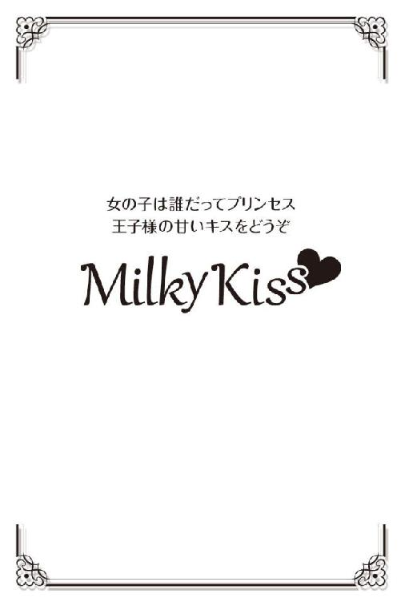

| 恋するノベル (Milky Kiss) | |
| 朝来みゆか | |
| 株式会社 パブリッシングリンク (2017) | |

恋するノベル
朝来みゆか
☆菜々美...恋愛以前
四月の朝は電車が混む。
スーツ姿の初々しい男の子が三人、新人研修について話している。あの講師、絶対Ｓだよな。名刺の渡し方だけで二十回もやり直しさせられたぜ。マジで？ 俺もノックの仕方で十回。
彼らの横に立つ女性が咳払いをした。きっと本人が思っている以上に、車内に声は響いている。
でもほとんどの乗客は彼らの会話など聞こえないふりをして、修行のようにきつく目を閉じるか、手元の携帯端末に集中している。学生のノリで話す新社会人の彼らも一、二年経てば、今この車両に乗っている他の客と同じように、黙って数十分の揺れに耐える集団の一部になるのだと思う。それが慣れなのか、成長なのかはわからないけれど。
駅に着き、ドア近くの乗客が入れ替わった。菜々美は伸び上がり、新鮮な空気を吸う。
ブレザーの制服のスカート丈を短くアレンジした女子高校生が二人、新たに乗ってきた。
「それでさ、あたしと別れた次の週には、カナとデートしてたんだって」
「うっそ何それ信じられない」
「ミサコが証拠写メ送ってきたもん。絶対二股かけられてたんだ、って思ったら、あいつとの何もかも無駄な時間だった気がして、腹立ってきちゃった」
「許せない。サイテーだね、二股男」
「考えてみると、知り合ったときからあやしかったんだよ。元カノと完全に切れてなくて、浮気癖であたしともつき合い始めたんだと思う」
顔つきの幼い感じは高校に入ったばかりでも通るが、制服の着こなし方は二年生以上の風格を感じさせる。髪の長い方が彼氏と別れた直後らしい。周りをはばからない大声でまくしたてる。聞き手の子も憤慨し、会話はさらに勢いを増してゆく。
二股、元カノ、浮気癖。
すっかり恋から遠ざかっている菜々美にとって、感情も憶測も包み隠さず喋る彼女たちの会話は新鮮だった。あんな風に、誰かを好きという気持ちだけで喜んだり、腹を立てたりしていた日々が懐かしい。女子高校生の暴露話はこれでもかと続く。
次の駅に着くまでに、この車両の乗客は彼女の恋の一部始終、交際していた彼氏がいかにだらしなくてひどい男だったかを、たっぷり知ることになりそうだ。
電車が鉄橋に差しかかる。いつものポイントで少し揺れた。菜々美は吊革をつかみ直し、窓の外に目をやる。川沿いの緑地はまだ冬枯れの状態だ。堤防に沿って植えられた桜の、枝先のピンク色だけが新しい季節の到来を主張している。
就職して六年目、東京で桜を六回見た。毎年、時期が来ればちゃんと咲く花はすごい。ごつごつと黒い枝で気温を感じ取っているのだろうか。
いろいろなものが芽吹く季節なのに何となく心が晴れないのは、学生時代の彼氏と別れたのもちょうど今頃だったからだ。激しい罵り合いをしたわけではないけれど、別れた後には「おまけ」がついてきた。
元彼が菜々美の陰口を言っているのを耳にしたのだ。
あのとき、菜々美は一人で耐えた。悲しみや怒りを言葉にできなかった。自分の心が傷を負ったのを一人で眺めているような感じだった。もし友人に話したら一緒に怒ってくれたかもしれないけれど、傷ついた事実を誰かに知られるのが恥ずかしかった。ひっそりと耐えながら、時間が経つことだけを望んだ。二度と咲かないつぼみを枝先につけたまま、養分を断ち、枯れるのを待つように。
黙って耐えるのが正しかったのか、菜々美にはわからない。恋の始まりも、恋の終わりも、正しさでは判断できないものだと思う。
あれ以来、恋は休んだままだけれど、二十八才になった今、仕事に関しては主張できるようになってきた。指導してくれた上司のおかげだ。
黙って耐えるのではなく、言うべきことは言わないと、自分だけでなく他の社員も困るのだと知った。
ひとと向き合うならば、言葉にしなくては通じない。
誰もが別の思考回路を持ち、それぞれの論理や都合、快、不快の感情で動いているのだから。外からは、そのひとが心の内で考えていることは見えない。
バッグの中で携帯電話が震えた。取り出すと、妹の早百合からのメールが届いていた。
『おはー。今年度は一限の授業もあるから早起きしたのに、いきなり休講だって。暇になっちゃった。そろそろ目が覚めるような新作書いてよ。待ってまーす。かわいい妹より』
実家で暮らす早百合はまだ大学生だ。コンサートだの買い物だの、用事がある度、東京の菜々美の部屋に泊まりにやってくる。頼られて悪い気はしないが、一緒に夜更かしをすると翌日に響くのが困る。
普段は三日おきくらいの頻度でメールをやり取りする。たわいのない日常報告が主だが、ときどき菜々美が創作した物語を送ると、妹は「メールノベルだ」と喜んで読んでくれる。妹以外の誰に読ませるつもりもなく、自分が小説家になれるとも思わないけれど、お話を作るのは楽しい。
話の中では菜々美は神様だ。
あのときこう言えばよかった、こうすればよかったと後悔の残った現実は変えられないけれど、物語を作るときには理想の配役で理想のやり取りを描くことができる。
テレビドラマよりも楽しみにしてる、と妹におだてられ、前作は途切れながらも半年ほど続いた。話が完結した後、年度末の忙しさで新作を考える暇がなかった。
新しい物語を生み出すなら、春らしい恋愛小説がいい。気分が明るくなるハッピーな物語だ。色でたとえるならビタミンカラーの、元気が出てくる話を書きたい。主人公は菜々美自身がよく知っている住宅設備メーカーで働いている設定にする。物おじせずに明るい性格で、仕事にも慣れてきた六年目。
恋の相手とはどんな形で出会うことにしようか......。
それまで全く関わりのないひとと町で偶然出会って恋に落ちるのもどきどきするし、友達の紹介で知り合うのもリアルで共感しやすいかもしれない。
でもやはり一週間のほとんどを過ごす職場で知り合う形がいい。相手の仕事の進め方を通して人柄や能力が見えてくる。
読者である早百合が「社会人になるのも悪くない」と思ってくれればいい。姉としてのおせっかい心もある。
車内では、女子高校生のお喋りと、新社会人たちの愚痴がまだ続いている。不満や、誰かをけなす言葉が耳に響く。
主人公が恋する相手は愚痴や悪口を言わない男性にしようと菜々美は思う。完璧な人格者は現実には滅多にいないけれど、物語の中でくらいは理想のヒーローと恋がしたい。
話は携帯メールで少しずつ書き送る形式だ。書き始めてみれば、主人公たちが動いてくれるだろうし、早百合の反応によって道筋が定まってくる。
菜々美は指になじんだ携帯電話を操作し、液晶画面に文字を表示させた。
主人公は七海。菜々美と同じ読み方の「ななみ」、二十八才の働く女性だ。
●七 海...ノベル 第一回
風汰くんと私は同じグループ企業の同年入社組だ。
外部から講師を招いて行われた研修を一緒に受けたのがきっかけで、顔を合わす度に挨拶するようになった。
「おつかれさま」
「寒いな」
エレベータや食堂でほんの一言二言交わす。毎日会えるわけじゃない。
一人のときも、同僚と歩いているときも、風汰くんは元気で楽しそうだ。いつもきちんと背筋が伸びている。
残業で遅くなった夜、風汰くんの笑顔に出会うと元気が出た。疲れを見せないところがタフでいいなぁと思った。
小さな接点を積み重ね、私の中で風汰くんは少しずつ、気になる存在に変わっていった。
『話があるんだけど』と風汰くんからの社内メールを受け取り、昼休みに会うことになった。約束をするのは初めてだ。
急いで昼食を終えて、エレベータで九階まで上がり、階段で屋上に向かった。
重い扉を開けると、まぶしい日差しが目に入った。
屋上には門扉やフェンスが並び、住宅展示場の玄関部分をいくつも集めたような光景が広がっている。型落ちになった自社製品が置かれているのだ。現役の商品のショールームは一階にあるため、屋上には一般客は来ない。
風汰くんは日当たりのいいベンチに座っていた。他のひとの姿はなかった。
「話って何？ 仕事で何かあった？」
「寒いよな？ なるべく他の奴がいない場所......と思ったらここになった。大丈夫？」
大丈夫、と私は答えた。ジャケットのすそを握って見せる。
風汰くんは深緑色のベンチの座面を示して、拭いておいたよ、と笑った。十五センチくらい離れた隣に私は座る。
互いの仕事の近況を話した。
風汰くんはホームセンターを経営する会社に、私は法人営業中心の販売会社に在籍している。いわゆる持ち株会社の傘下に各事業会社がある形だ。同じビルに勤めていても、普段は仕事上で絡むことはない。
共通の知人の話で盛り上がった後、風汰くんが言った。
「七海って、どんな奴とでもすぐ仲良くなるよな」
「確かに人見知りはしない方だと思うけど......でも、女として見られないって言われることもあるよ」
「俺、最初から七海とは話しやすかった」
「え、そう？」
ほめられているのはわかるけれど、風汰くんが本当に言いたいことは別にあるような気がして何だかもどかしい。続く言葉を待つ。風汰くんの少し長い前髪が風になびく。
「こういう感覚って久しぶりだと思ってさ」
「久しぶり？」
「ああ。学生のとき以来かも。ちょっと話しただけで気持ちが浮き立つ感じ。七海は男女問わず人気者っぽいけど、そういうの、俺にとっては......特別だってことを知ってほしくてさ」
風汰くんは空を仰いだ。視線の先を追いかけるように私も空を見上げた。
「つき合わない？」
風汰くんを見ると、いつもの余裕たっぷりの横顔に少し赤みが差している。照れを隠そうとしているのか、口元をきつく引き結んでいる。
昼休みに呼び出して二人で話すという時点で、その一言を予感していなかったといえば嘘になる。もし風汰くんが言わなかったら、今日じゃないにせよ、私から言い出していた気がする。
「ありがとう」
私は膝に両手をそろえてつぶやいた。私を選んでくれたこと、勇気を出してくれたこと、時間を設けてくれたことに、お礼を言いたかった。
風汰くんがゆっくりと私を見る。
「それってＯＫって意味？」
「......うん。よろしくお願いします」
私が頭を下げると、いえいえこちらこそ、と風汰くんも神妙な顔つきで頭を下げた後、
「よっしゃー」
立ち上がり、ガッツポーズで叫んだ。緊張がほどけたらしく、再びベンチに倒れ込む。
「そんな声出したら下まで聞こえちゃうんじゃない？」
「え、そんな大声だったか？」
うろたえる顔がかわいい。
「うん」
顔を見合わせて笑う。
ずっと前から一緒に過ごしてきた幼なじみみたいに自然な空気にほっとする。
風汰くんの生い立ちや趣味、交友関係などまだ知らないことの方が多いけれど、不安はなかった。これから知っていける喜びの方が大きいから。
「戻ろうか」
「うん」
風汰くんが立ち上がって、伸びをした。春の日差しの中、ぐんぐんと育つ草木を思わせる動きだった。こうして見ると、風汰くんは背が高い。私と二十センチくらい差がありそうだ。
小さく呼吸を整え、階段に向かう。風汰くんがついてきて、私の後頭部にそっと触れた。ひゃっ、と声を上げ、私は首をすくめる。
「ごめん、七海の髪が綺麗だったから」
「もう、そういうこと言うのはストップ」
「えー、つき合ってるんだからいいじゃん」
「職場では駄目。風汰くんだって、他のひとに冷やかされたら恥ずかしいでしょ？」
なおも頭を撫でてこようとする風汰くんの手を振り切って、私は階段を駆け降りる。
午後の仕事を始める前に、にやつく顔を仕事モードに戻さないと。
（続く）
☆菜々美...委員会での出会い
朝から書き始めた理想の彼からの告白場面の続きは、昼休みに会社の屋上で書き綴った。
三十分ほどベンチに座り、携帯電話のボタンを打っていると、ときおり視界の隅にグループ社員の影がよぎった。都心のオフィス街に位置するビルのため、風情のある景色は見えないが、気分転換に日射しを浴びたり、ベンチで昼寝をするには最適な場所だ。
禁煙が徹底されており、煙草の煙に悩まされる心配はない。
早百合にメールを送信したのは、昼休みがちょうど終わる頃だった。
エレベータを使わず、階段を下りて六階の自席に戻る。明るい戸外にいたせいで、室内の人工照明に慣れるのに少し時間がかかった。パソコンのスクリーンセーバーを解除すると、社内メールが届いていた。
『交流委員会選出のお知らせ』
菜々美はメール本文を開いた。
社内の交流委員会の今年度メンバーとして選出されたことと、翌週に第一回の委員会が開催されることが告知されている。活動は定時後に行われ、その時間の残業代はつかないとご丁寧にも記されている。
（委員会なんて立候補してないのに......）
六年目にしてようやく仕事に手応えを感じられるようになった。でもまだ余裕があるわけではない。交流委員会がどんな活動をする集まりなのかも知らない。おおかた、部署の異なる者同士で情報交換でもするのだろう。
菜々美はパソコンの陰から小林課長の様子をうかがう。課長は耳と肩で受話器をはさみ、右手でペンを持ち、左手で資料をめくりながら通話相手に何やら説明している。
仮に課長が菜々美を委員会メンバーとして推薦したのだとしても、文句は言えない。
思い返せば七つ年下の妹が生まれて、姉という立場になったときから、泣きたくても黙って呑み込むようになった。お姉ちゃんはおとなしくて手のかからない子だと母親が言い、我慢できるんだ、偉いね、と親戚にほめられる。そんな体験の積み重ねが、おっとりした菜々美ちゃんという像を作ってしまった。
黙っているからといって、何も感じないわけではない。重い記憶をたぐりかけ、菜々美は頭を振った。
面倒だなと思う。でも委員会の任期は今年度、つまり一年間だけだ。一年耐えればいい。効率よく本業を片づけてこなそう。翌日の出張に備えて作成した資料を印刷する。プリンタが温風と共に紙を吐き出し始めた。
菜々美が勤める住宅設備メーカー「ホープエクステリア」は、都心の本社ビルの他、国内に複数の営業所と、三ヶ所の工場を持っている。
菜々美の席は本社内にあるが、オフィスに出勤するのは週の半分強だ。
平均すれば月曜から金曜のうち、三日が本社出社、残り二日が工場への出張という配分になる。最初のうちは課長にくっついていくだけだったが、去年からは一人で出向くことも増えた。
しばしば出張が入るおかげで新幹線の列車番号に詳しくなった。偶数は上りで、奇数は下りだ。
単身での出張を終えて、本社に戻ってきたのが午後五時過ぎだった。定時の五時半まであと三十分もない。お疲れさまです、とカートを引きながら自席に着くと、課長が目を丸くした。
「あれ、品川から直帰してよかったのに。急ぎの仕事はないよね」
「業後に委員会の集まりがあって」
菜々美は作り笑顔で答える。
「委員会？ あぁ、そうか。今年、メンバーに選ばれたんだったな。何か社長が張り切ってるらしいね。社内報をリニューアルするって」
「え、そうなんですか」
そうだ、交流委員会が社内報を発行しているのだった。
「まぁ、一人でやるわけじゃないよ。どうにかなる。がんばれよ」
「はい」
席につき、届いていたメールに全て返信したところで、定時を報せるベルが鳴った。
筆記用具のみ持って二階の会議室へ向かう。
普段は座ることのないクッションの利いた黒い椅子が、円形テーブルを囲む形で並んでいる。さらに、紙コップでも缶でもなくソーサーつきの陶器のカップに入ったコーヒーが運ばれてきた。役員秘書たちが用意してくれたようだ。
集まったメンバーは総勢八名。男女半々で、知った顔も知らない顔もあった。さらに社長と役員が現れ、一回目の会合が始まった。
テーブルについた社員の顔を見て、社長がうなずく。
「新年度の忙しい時期に集まってくれてありがとう。大勢の社員が交流を図れるよう、君たちには社員代表として知恵を絞ってもらいたい」
滅多に同席することのない社長とテーブルを囲むのは緊張の一言に尽きる。菜々美はうつむいてメモを取るのに終始した。
「二回目以降の集まりは、君たちメンバーのみで進めてもらうからね」
社長が言い、菜々美はひそかに胸をなで下ろした。これから毎月、お偉方を含めた会合なんて荷が重すぎる。
委員の自己紹介が始まり、菜々美は二番目に挨拶した。
「入社六年目、生産管理課の都筑菜々美です。本社と工場を行ったり来たりしています。どうぞよろしくお願いいたします」
拍手を受けるのは照れくさい。女性社員の中では菜々美が一番年上だった。
「開発部の江端保孝です。よろしくお願いします」
円形テーブルのちょうど菜々美の向かい側に座った男子が硬い声で名乗った。
「江端くんは何年目になる？」
役員の一人が聞いた。
「三年目です」
「そうだったか。期待してるよ」
江端と名乗った彼は黙って頭を下げた。新入社員の情報は社内報に掲載されるはずだ。菜々美が入社したとき、同期で撮影した写真が載った冊子を受け取った憶えがある。でもここ数年、まともな社内報は配られていない。三期下の社員が何名採用になって入社したのか、他の部署の後輩の顔や名前もわからない。
机の上で組まれた手、きちんと着込んだシャツと無地のネクタイ。相当の美形だ。顔の形が綺麗だし、額にかかる前髪は思わず触れてみたくなるような自然なつやを帯びている。小説の中の風汰が現実に現れたような──いや、菜々美が想像で生み出したキャラクターよりももっとルックスレベルは上だ。
こんな社員がいたなんて。
見惚れてしまった菜々美の意識を引き戻したのは、見知ったメンバーだった。
「営業十年目の山田啓吾です。知ってる顔も多いですが、この機会に皆と親交を深めたいと思います。よろしく」
仕事で話す機会の多い営業部の先輩が、一際通る声を放った。山田先輩はメンバーの中で最年長だ。きっと委員会活動も引っ張っていってくれるだろう。
工場勤務の若い女性社員も来ており、上橋千穂と名乗った。あだ名はネズミちゃんというらしい。
年間スケジュールの調整をし、本社会議室での会合は解散となった。社長と役員が去った後、山田先輩が言った。
「よし、ここからが本番だ。飲み行くぞー。荷物まとめて五分後に一階集合」
「え」
思わず声を発してしまった。出張帰りで、できれば早く帰って眠りたいのが本音だ。
「何だよ、都筑、交流委員会なんだから交流するのが本題だろう」
「あ、はい」
他のメンバーに、菜々美が委員会活動に消極的というイメージを持たれては困る。
「あの、参加します」
「当たり前だ。じゃ、五分後な」
菜々美が荷物とコートを取りに六階へ戻ると、課長はまだパソコンに向かっていた。菜々美を見て手招きする。
「あ、都筑、ちょうどよかった。このパワポ資料、編集したいんだけど、うまくいかないんだよ」
「どれですか」
パソコン操作で助けを求められるのはよくあることだった。
「フッターになってるのかと思ったんだけど......社名のロゴの画像が選択できないんだよね。何これ？ テンプレート？」
「ちょっと拝見しますね」
マウスを預かり、画面をスクロールする。課長のリクエストに応えて問題を解決するまで、思った以上の時間がかかってしまった。
「これでＯＫですね」
「おー、サンキュ、助かった」
ふと視線を感じて顔を上げると、先ほど会議室でテーブルを囲んだ中にいた美形の社員、江端がフロアの入口で柱に寄りかかるように立っていた。
目が合った途端、江端は菜々美から視線をそらす。
何をしにきたのだろうという疑問が湧いた。
「──あ、上書保存してくださいね」
課長に向けて言い、菜々美はスプリングコートをはおった。
江端は黙ったまま、エレベータの下行きボタンを押した。
エレベータを待つ間、隣に立つ江端を横目で観察する。あごから首にかけての線に目が行った。そんなにがっちりした体格ではなく、全体の印象は華奢で威圧感はないのに喉仏はきちんと出ていて、男のひとだなあと思う。スーツも着慣れていて、三期も下には見えない。
江端は顔を上げて回数表示を見上げたまま、一言も発しない。
一階で降りると、輪になった委員会メンバーたちが一斉にこちらを向いた。
「都筑さーん、荷物取りにいくって、どこまで行ってたのー？」
「すみません、お待たせしました」
「化粧直しでもしてたんですか」
後輩の女子社員が笑いながら話しかけてくる。無邪気を装って失礼なことを言うなあと思ったけれど、わざわざ指摘して嫌な空気になるのは避けたい。菜々美は笑顔を作った。
「ごめんね、急いだんだけど」
「何だよお前、外の奴らとの合コンじゃないんだからそんな気合い入れる必要ないだろ」
山田先輩までもが冗談に乗って菜々美を笑う。
そのとき、江端がぼそっと言った。
「......何か、上司につかまってたみたいすよ」
どきっとした。
嘘ではない。あのとき課長に、今は急いでいるから後にしてくださいとは言えなかった。委員会メンバーに、待たせたのは上司のせいだと言うのもはばかられる。さらっと助け船を出してくれた江端の気遣いがありがたかった。
「江端さんにかばわれるなんて、いいな」
後輩の女子社員がかわいらしい声でつぶやく。菜々美は反応に困り、眉根を寄せた。この子は江端を慕っているに違いない。確かに江端は美形だし、皆が盛り上がる中で一歩引いたクールなところは格好いい。てらいなく好意を口にできる若さがうらやましいと思った。
会社からほど近い居酒屋へ移動した一行は、八名用の個室に案内された。
さぁ座れ座れ、と山田先輩に促されるままに腰を下ろすと、江端と隣り合わせになった。顔の近さに焦る。逃げるようにうつむけば、小皿を順繰りに回したり、割り箸を割る江端の手の動きを遠慮なく観察することができた。江端のビールは向かい側の席の後輩が注いだ。
山田先輩が店員に注文を出し、乾杯、と周囲の喧騒に負けない声を張り上げた。
「じゃ、酔っぱらう前に、今後一年間の委員会活動について、どんどん意見出して」
社外向けの広報業務は、グループを束ねる持ち株会社の広報部が担っている。委員会では社内報の制作と、社員間の交流を目的とした催しの企画を行うことになる。
「俺としては、ゲーム大会とかやりたいわけ」
山田先輩がダーツの矢を投げる真似をした。
「催しって、社員全員を対象にやるんですよね？ 私たちだけで進行するのは大変じゃないですか？」
菜々美は首をひねる。
「それは当日だけ手伝いのスタッフを社内から募ればいい」
「学園祭のノリですね。ビンゴはどうですか？ スタッフは最少人数で、大勢が一度に参加できると思いますが」
「そもそもいい大人がそんなガキみたいな企画に参加してくれるかっていう」
営業部の後輩が、話を否定の方向に持っていく。
「できる限り大勢の社員が交流できるように、って社長のお達しですよね......」
「だな......」
山田先輩は頭を抱え、あ、そうだ、と顔を上げた。
「江端、お前開発部なんだから何か目新しいアイディア出せよ」
無茶だ。気の毒に思いながら、菜々美は江端の言葉を待つ。
「時期はいつっすか」
「んー？ 年度内ならいつでもいいはず。準備期間たっぷり取ろうと思ったら下期の方がいいだろうな」
「クリスマスパーティーとか......」
江端がぼそっとつぶやく。山田先輩がうなった。
「おー、それだ！ 独り身の社員を救済するクリスマスパーティー。その日は残業もなし。二十四日の夜は社員一丸となってイブを祝おう！」
「予定あるひとも多いと思いますし、参加者見込めないですよ」
後輩の一人が却下した。
「何だ何だ、うちの会社はそんなにリア充ばかりなのか？」
会社を離れた酒の席で、真面目な論議が続くはずもない。社員交流の催しについて、結論は出なかった。
年三回の社内報発行に向けて、リニューアル第一号の編集会議の日程を決めた他は、雑談に終始した。
山田先輩と、同じく営業の後輩がよく喋り、江端はほとんど口をはさむことはなかった。もともと寡黙なのか、酔うとさらに黙り込むタイプかもしれない。
他部署の社員が日頃どんな仕事をしているのか、意外に知らないものだ。開発部というと、新商品を作るために材料を配合したり、撹拌する機械をいじっているイメージがあるけれど、朝から晩までそれだけではないだろうし。一日がどんな風に過ぎてゆくのか尋ねたかったが、話しかけられる雰囲気ではなかった。漫画やドラマでは、酔って意気投合して仲良くなる展開を男女に限らず見るけれど、現実は作り話のようにうまくはいかない。
江端はゆっくりしたペースでビールを飲んでいた。耳も指先も店に入ったときと比べれば多少赤いが、背骨はまっすぐ伸びている。
他のメンバーは「人生最悪のクリスマス」をネタに盛り上がっていた。山田先輩は自分がいかに恋愛でひどい目に遭ったか語りながら、何杯目かわからないビールを飲み干した。ピッチャーで頼んだビールはもうなくなりそうだ。
後輩女子は綺麗な色のカクテルを大事そうに抱えながら、先輩たちに笑顔を向けている。まんべんなく全員に微笑みかけながらも、彼女はときおり江端にちらっと視線を走らせる。あなたに特別な興味があります、って目で訴えているようなものだ。気持ちに正直になれる彼女がうらやましかった。
「とりあえず携帯アドレス交換しとくかぁ。基本は社内メールだけど」
山田先輩の提案に、全員が応じる。隣り合った同士から連絡先を教える。
「生産管理課の都筑菜々美です」
菜々美が名乗ると、江端はかすかにあごを動かして言った。
「知ってます」
「え？」
「さっき会議室で」
「あ、そうか、そうですよね。自己紹介しましたね」
菜々美はあわてて笑顔を作る。名刺交換を伴う挨拶には慣れているけれど、合コンのようなフリートークは苦手だ。
「江端くんは開発部ですよね。えっと、何を開発してるんですか？」
「主に素材を」
「素材......」
「構造も検討してます。去年発売になったホースリールの巻き取り部とか」
菜々美の想像の中で、フラスコを振る白衣姿の江端が、急に金づちに持ち替えた。江端は続けた。
「コンピュータを眺めてる時間も長いですよ。一日の半分以上っすね」
「そうなんですね......」
ホースリールの形状はすぐには思い浮かばない。生産管理の仕事では、製品や部品は全て番号で識別している。
言葉に詰まった菜々美に、江端がぼそっと言った。
「僕に敬語使わなくていいすよ」
「......え、ああ、江端くん、三年目だっけ」
「はい。入社遅かったんで、多分、年は都筑さんとそんなに変わらないと思いますけど」
「そうなの？」
干支を尋ねると、江端は確かに菜々美の一つ年下だった。
「ほぼ同世代なのね」
「あの、僕が」
江端が何か言いかけたところで、
「江端は修士出てるもんなー」
地獄耳の山田先輩が離れた席から割り込んできた。ああ、もう。思わず菜々美は苦笑する。江端の言葉を聞き取れなかった。しかも山田先輩は一言はさむだけで満足したのか、もう別の話題に移っている。こういうの、ヒットアンドアウェイっていうんだっけ。
「アドレス登録できました？」
もやっとした菜々美の気持ちを吹き飛ばすような柔和な笑みを浮かべ、江端が尋ねる。
「あ、ううん、まだ」
菜々美は手元に集中し、受信した江端保孝のデータをアドレス帳に追加する。
「空メール送るね」
江端はしばらくスマートフォンをいじり、ＯＫとつぶやくと、壁のハンガーにかけていた背広の内ポケットにしまった。
「さっき聞き逃しちゃったんだけど、何を言いかけてたの」
菜々美は江端のコップにビールを注ぐ。しゅわしゅわと泡の層がふくらんでゆく。
「あぁ、都筑さんって以前、人事部にいなかったすか？」
「私？ ううん、ずっと生産管理だよ」
江端はふっと目を泳がせ、
「変なこと聞いてすいません」
頭を下げた。鼻先にシャンプーが香った。いろいろな食べ物の匂いが混ざったお店の中で、錯覚かもしれないけれど。
飲み放題の二時間で充分に飲み、騒いで満足したのか、その後さらに次の店へ流れる者はいなかった。全員で駅へ向かう。何だか悪くない気分だ。
お酒のせいでほてった頬をひんやりした夜の空気が冷ましてくれる。
ＪＲ組が多く、地下鉄に乗るのは菜々美だけだった。地下鉄入口で委員会メンバーに会釈をした。
「お疲れ！ 明日遅刻すんなよー」
そう言って両手を振る山田先輩は千鳥足だった。
●七 海...ノベル 第二回
休日のデート先は、沿線のショッピングモールに決まった。風汰くんが私の買い物につき合ってくれるという。
「俺、ショッピングモール嫌いじゃない」
「でも女性物のアパレルに興味があるわけじゃないよね？」
荷物を持って私の後をついてくるのが楽しいなんて、奇特なひとだと思う。
「一緒にいるのが、いーの」
そう言って私の後頭部を大きな手で包むように引き寄せ、おでこを軽く合わせる。一瞬、鼓動がはねたのは、キスをされるかと思ったからだ。
「ん？ どうした？」
立ち尽くしてしまった私に、風汰くんはいつもの笑顔を向けてくる。会社で見るスーツ姿とは違う普段着も、私をどきどきさせる要因の一つだ。
レジでの支払いが済んだ後、私の荷物を「貸して」と持ってくれるのも、嬉しいより恥ずかしい。
「やっぱり自分で持つね」
風汰くんの手からショップの紙袋を取り返す。風汰くんは苦笑して、私の好きにさせてくれた。彼氏に荷物を持たせて一歩先を歩く女にはなりたくない。せっかくのデートだから、並んで歩きたい。やっぱり身長高いなぁ、なんて横目で見ながら。
「あ、上に観覧車があるって」
目ざとく看板を見つけたのは風汰くんだ。
「乗る？」
「乗っちゃう？」
「とりあえず上行ってから決めようか」
「値段も見ないと」
エレベータを待ちながらも時間が惜しくて、私たちは階段を足早に上がった。そういえば風汰くんに告白されたのも屋上だった。ショッピングモールではなく、会社のだけど。
「大きい、ね」
「......ん、でもでかい方が楽しめるんじゃん？」
私たちは観覧車の根元に立ち、支柱についた色とりどりの箱が回るのを見上げた。休日とはいえ、乗客はさほど多くなく、一つおきに人影が見える程度だ。
係員は慣れた様子で親子連れを誘導し、行ってらっしゃい、と声をかけている。
「行ってらっしゃい、っていいな」
風汰くんが言った。
「うん。数分間の空の旅に行ってらっしゃい、ってことなんだろうね」
料金は一人七百円だ。今日のデートでこれに乗らなかったら損だよねと思えるほど、ゆっくり回るカラフルで巨大な輪は魅力的だった。
「大人二枚」
財布を取り出すと、風汰くんが手で押しとどめた。
「これは俺に払わせて」
やわらかな笑顔の奥に強い意志が見えて、私は引き下がった。
「お足もとにご注意ください」
係員が緑色の箱の扉を開けてくれた。私が先に乗り込み、向かいに風汰くんが座った。
「行ってらっしゃい」
「行ってきます」
二人して係員に会釈をした。高度を上げ始めた箱は、街の風景を新鮮に見せる。
「俺の家見えるかな」
「どっち？」
「んー、さすがに電車八駅分の距離は見えないか」
「残念」
「あ、でも」
風汰くんが隣の隣の箱を指さした。
「カップルがいちゃついてんの見えた」
「えー」
私が少し身を乗り出してのぞこうとしたとき、腕を引かれ、私たちはキスをした。初めてのキスは、する前よりも、唇と唇が合わさった瞬間よりも、その後の方がどきどきした。鼓動が速くなり、言葉が出てこない。何か言わなければ、と私は焦る。
「あ、あのね」
「ん？」
視線が合った。
「どうしよう」
揺れる心がそのまま声になって、どうしよう、と私はつぶやいていた。
風汰くんが心配そうな目つきで私を見ながら尋ねた。
「七海、どうしたの？ 何か困ることある？」
私は両手を自分の頬に当てた。指の腹で顔の熱さを感じる。きっと赤くなっているだろうなと思う。
「私、変な顔してない？」
「大丈夫だよ」
「本当？」
「うん。強いて言うなら、いつもよりかわいい」
「......」
私の頬はますます熱くなる。
（続く）
☆菜々美...同じメニューを選ぶひと
社員食堂は八階にある。十二時過ぎ、各フロアから上がってきた社員たちが食堂前に列を作る。六階の生産管理課は部署の人員が少ないためか、早番や遅番に分かれず、全員で昼食を取る不文律があった。菜々美が配属されるまではわずか四名だったらしい。今は菜々美と、同時期に異動でやってきた二人を加えて七名だ。列の最後に加わり、伸び上がってメニュー札とサンプルを見る。
「お、Ａ定食は豚の生姜焼きか」
「課長はいつもどおり麺ですよね」
「小遣いの範囲で昼食代まかなわないといけないからさ。『安い』は絶対の正義」
課長はお小遣いの値上げ交渉に失敗したらしい。
菜々美以外は全員男性、そして既婚者だ。はっきり言えばオジサン、よく言えば脂ののっているひとばかりが集まった男くさい課に、なぜ自分が放り込まれたのか最初はわからず戸惑った。先輩社員の足手まといにしかならないのではと思ったし、実際、先輩にくっついて工場出張へ同行しても、荷物持ち、スケジュール管理の役目すら果たせないことが多かった。
「私、席取っておきますね」
早くに配膳列を離れた菜々美は窓辺のテーブルを確保した。八人がけテーブルで、四対三に向かい合うのが、何となく慣習になっている。課長はきつねそばの丼を載せたトレーを持ったまま、こちらに気づかず食堂内を見回している。
かたん、と音がして、目をやるとテーブルの一角にＢ定食のトレーが置かれていた。開発部の江端だった。シャツ姿だ。八つある席のうち、菜々美の座る一席しか埋まっていないのを見てやってきたのかもしれなかった。
「あの......」
「いいすか、ここ。僕一人なんで」
「え？」
「セクションのひと、全部で七人ですよね」
「うん......」
同席する許諾を得たとみなしたらしく、江端は椅子を引き、箸を取る。
何を話そう。交流委員会の飲み会楽しかったよね、とか。ずいぶん間抜けな気がするけれど、他に共通の話題が見つからない。
江端は味噌汁を一口飲むと、テーブルの上を見つめて言った。
「僕の勘違いかと思って、開発の先輩に確認しました。四年前の会社説明会のとき、都筑さん、大会議室で案内してましたよね」
「え？ あ、受付の人手が足りないって、各部署の若手が駆り出されたの」
やっぱり、と江端がほっとした顔になる。
「朝一番の説明会が定員オーバーになってたんすよね。でも僕は次の会社訪問の予定が入ってたから午後の説明には出られないし、縁がなかったんだってあきらめて帰ろうとしたら、受付で使ってたパイプ椅子を持ってきてくれて」
「私が？」
「はい」
言われてみればそんなこともあったかもしれない。おぼろげな記憶だ。真新しいスーツ姿の学生が本気で困って見えたから、一時間ほど自分の椅子を譲った。
「会議室の一番後ろで会社紹介のビデオを見ながら、ここに入りたいって思ったんすよ。僕が今開発やってられるのは都筑さんのおかげです」
採用活動の時期には毎日、数百名規模の志望学生が訪れる。菜々美は憶えていなかったけれど、江端の方は恩を感じていたらしい。
「江端くんなら実力で入ったんだと思うけど」
自分の行動が、少しでも助けになっていたならよかったと思う。でも学生の頃の江端を思い出せなくてもどかしい。
菜々美を見つけた課員たちがやってきて、空席に座った。江端を見て話しかける。
「菜々美ちゃんの同期？」
「いえ」
江端は箸を動かす手を止め、口ごもった。
「交流委員会で一緒なんです。開発部の江端くん」
先輩たちはそうなんだ、と軽くうなずくとそれぞれのトレーに載った皿に箸をつけた。Ａ定食は豚肉、Ｂ定食はほっけ、百円安い麺はきつねそばだ。Ａが圧倒的に人気で、Ｂ定食を選んだのは菜々美と江端だけだった。
肉よりは魚なのかな。同じメニューを選んだ江端に親近感を覚える。先輩や上司が豚肉とご飯を勢いよくかき込むそばで、ほっけの身と骨を丁寧に分ける菜々美は自然と口数が少なくなる。
この会社で働き始める前から、江端は菜々美を認識していたのだ。会社説明会で受付をしていたから、人事部の社員だと思ったのだろう。その程度の邂逅なんて、他にもきっとたくさんある。運命の出会いだと思うほどおめでたくはない。それでも江端が一瞬の記憶を大事にしてくれていたことは嬉しかった。
開発部では個別に昼食を取るのだろうか。尋ねてみたかったけれど、テーブルの対角線の端と端に座った同士で会話は難しかった。江端の魚の食べ方が綺麗だということはわかった。
「お先です」
味噌汁を飲み干し、江端が席を立った。菜々美は会釈で応える。江端がいなくなると、八人がけテーブルの空席一つが寒々しく見えた。
上司と先輩は生姜焼きのたれでひたひたになった千切りキャベツを頬張り、融通の利かない工場長の名前を出してぼやいている。
社内恋愛という言葉が頭に浮かんだ。
携帯で書き綴って妹に送っているノベルの、風汰と七海も社内恋愛だ。社内でつき合っていれば、さびしくなる度に顔を見ることができるし、毎日出社するモチベーションも上がる。でもそれ以上に周囲の目が気になるに違いない。冷やかされたり、やっかまれたり。もし恋がうまくいかなくなったときは、働き続けることもつらくなるだろう。
せっかく充実している仕事を恋が邪魔する事態は避けたい。職場の雰囲気を重くしたくもない。
妹からのメールが届いた。
『ベタ甘じゃん。嫌いじゃないけど（笑）ラブラブ順風満帆でつまらないかも。あ、おもしろいんだけど』
どっちよ、と突っ込みたくなる文面だ。素直な感想を伝えつつも、菜々美の創作意欲をしぼませないよう、早百合なりに気を遣ってくれているのだろう。
確かに、つき合い始めた風汰と七海は幸せいっぱいで喧嘩もしていない。波乱万丈の物語にする勇気はないけれど、続く展開は変化球を投げるくらいがいいかもしれない。
●七 海...ノベル 第三回
特に毎回約束をしなくても、風汰くんと一緒に夕食をとるのが習慣になっていた。定時が近くなってきたら業務用のメールで仕事の進捗を伝え、頃合いを計って待ち合わせる。
ビル内の食堂は夜も開いているけれど、所属の違う二人がそろって食べにゆくには抵抗があり、私たちは外の店に行くことにしていた。
冷やかされたくない気持ちもあるし、つき合い始めたことをまだ二人だけの秘密にしておきたかった。
行きつけのレストランバーは人通りの少ない道に面している。会社からそう遠くない場所だけれど、駅に向かう方角とは反対のエリアだし、社員に見られる危険も少ない。
その日もいつもと同じように、私は風汰くんにメールを送った。
『六時から打合せ。七時前には終了予定』
風汰くんも今週は忙しくなさそうだから、きっと私の方が遅いくらいだろう。
打合せを終えて自席に戻っても、メールソフトの新着受信マークが光っていない。
私はトイレに立つついでに携帯メールで連絡を入れた。新しく来た部長がうるさいひとで、自席で携帯をいじっている部下を見つけるとぶつぶつ言うのだ。
私の方はいつでも出られるから連絡して、と打ち、明日でもかまわない仕事を片づけながら返事を待った。
風汰くんから連絡が来たのは、午後九時過ぎだった。もう部長の姿もなかったので、自席についたまま携帯を見た。風汰くんはいつも顔文字のない、改行も少なめのメールを送ってくる。でも今日は珍しくの顔文字が使われていた。
『ごめん。ちょっと急用で いつもの店で待ってて』
私たちのお気に入りは、かしこまりすぎない無国籍料理店だった。フレンチっぽいこってりメニューやイタリアンらしいピザやパスタの他、和風アレンジの品もあって飽きない。日付けが変わった後、午前一時まで営業しているため、ラスト・オーダーの時間に焦ることもなかった。
待ち合わせです、と店員に告げ、二人がけのテーブルについた。風汰くんを待つ時間は苦痛ではない。早く会いたいな、顔を見たいなとは思うけれど。
私は店内の他の客を観察しながら、ピニャコラーダをゆっくりすすった。
飲み終える頃、店の扉が開いて風汰くんの姿が見えた。私は座ったまま片手を上げた。風汰くんは目を細めて店の中を見回すと、やっと私に気づいてほっとしたように頬を緩めた。一連の表情の変化を見ているだけで楽しい。
「残業だったの？」
「いや、ちょっとひとに呼ばれて」
誰に、と私が聞こうとした声は、注文を取りにきた店員に遮られた。
「七海、何飲んでるの？ 俺もそれ」
どんな味かも尋ねずに同じものを頼んだ風汰くんは、背広を脱いで椅子の背にかけた。ふっと煙草の匂いがした。風汰くんはノンスモーカーだけど、誰か煙草を吸う上司に呼ばれて話していたのかもしれない。
お通しの小皿に箸をつける風汰くんを見ていると、一日の疲れも消え失せる。
「にこにこしてるな」
「うん。あ、今日くれたメール、顔文字使ってたらからびっくりしたよ」
「あー。七海には子供っぽいところは見せないようにしようと思ってたんだけど、つい」
「かわいいところ見たいよ」
「かわいいっていうのは、俺が七海に言う言葉」
「私だってたまには風汰くんのこと」
「いいから、七海は俺にかわいがられてな」
少し乱暴に言うのは照れているからだろうか。甘いカクテルよりももっと甘い言葉を交わし、私たちはメニューをのぞき込む。
「貝とミニトマトのアヒージョは欠かせないでしょ。バゲットも頼むよね」
「んー」
「どうしたの？」
「バゲットはパス。......さっき少し食ってきた」
「あ、そうなんだ。じゃ、オーダーは控えめにしようね」
注文したものが運ばれてくると、風汰くんは思ったより勢いよく食べた。
「無理してない？」
「してない。七海がおいしそうに食べるから、俺も食欲湧いてきた」
仕事の話を少しした後、いつもより安く済みそうだね、と言いながらレジに向かう。私も風汰くんも実家暮らしだから、外泊は抵抗がある。そういうことはまだ早いよね、という認識は共有できていると思う。
風汰くんが黒い革財布を取り出した。はらりと落ちた何かを拾い上げると、レシートだった。
「あ、ごめん」
手渡す前に目を走らせたのは違和感というか勘が働いたからかもしれない。レシートには今日の日付、風汰くんがここに到着する二十分くらい前の時刻が印字されていた。店の名前にも見覚えがある。会社から駅方面に進んだ通りにあるカフェだ。
「クレストカフェ、行ったんだ？」
「......ああ」
ぺらっと軽い小さな紙切れが教えてくれたことは他にもあった。二名様と書かれていた。代金の千五百二十円は風汰くんが支払ったのだろうか。
沈黙を破るように風汰くんが言った。
「昔つき合ってた子が急に会社の近くまで来てさ。いや、今はもう全然、友達っていうか知り合いレベルだけど、帰れって言うわけにもいかないじゃん。困ってるって言うし」
私たちはいつものように割り勘で支払いを済ませ、いつものようにごちそうさまと店員に声をかけて店を出た。でも私たちの間の空気は全くいつもとは違っていた。
まるで疑われるのを怖がるように風汰くんは説明を続け、私はああそう、うん、と相槌を打つ。きっと風汰くんは嘘はついていない。問い詰めようとは思わない。どうして最初に話してくれなかったのだろう。昔の彼女に会うって、今の彼女である私に教えてくれてもいいよね。もしレシートが財布から落ちなかったら、何も言わないつもりだった？ それってトラブルの種だ。
「七海に嫌な思いさせてごめんな」
「ううん」
渦巻く気持ちを抑えつけ、私は微笑む。
「気にするようなことは何もないから。その子が、ちょっとストーカーみたいなのに遭ってて困ってるって言うから、アドバイスしただけで」
「ストーカー？」
「ああ。さすがに放っておけないだろ」
「そうだね」
私はうつむき、小さな声で言った。
「解決するといいね」
風汰くんは優しい。でも皆に優しいひとなんて、彼氏としてはちょっと減点だ。
そう思う自分は心が狭いのかもしれない。かつて風汰くんが彼女として選んだひと。別れても風汰くんを頼るひと。一体、どんな子なんだろう。
（続く）
☆菜々美...彼の苦手なもの
昼休み、化粧室で歯を磨いていると、携帯電話にメールの着信があった。
『おもしろくなってきた！ ここから七海と元カノで風汰を巡って争うどろどろの展開希望！』
菜々美は苦笑する。読者である早百合のリクエストには応えるつもりだけれど、さわやかでハッピーな恋を描くつもりが、当初考えていなかった方向に進んでしまいそうだ。
風汰の昔の彼女の詳細はまだ明らかにしていない。リカというのが名前だ。日本で一番有名な人形ではなく、実家にいた頃に母が再放送で見ていた『東京ラブストーリー』の主人公から拝借した名前だ。どちらかというと、リカよりもライバルのさとみに近いポジションだけれど。ノベルの中でこの先、リカの存在をどこまで大きくするかが悩みどころでもある。
ラブストーリーが好きなのは血筋に違いない。実家では母と早百合と一緒に、女三人でテレビに向かい、恋愛ドラマを見ることがよくあった。
東京には何でも売っているけれど、ドラマのような恋は手に入りそうにない。むしろ女性ばかりの職場だったら、外に出会いを求めて街コンとかパーティーへの参加も考えたかもしれない。
今は仕事をがんばる時期だと言い聞かせ、菜々美は少しずれた社員証のネックストラップをまっすぐに整えた。午後もがんばろう、と鏡を見て気合いを入れ直す。
定時後の会議は紛糾した。交流委員会の活動のメインとなる社内報制作のため、各地の拠点を取材することになったのだが、日が暮れてから行っても現場の様子はつかみづらいだろうという意見が出た。工場訪問は仕事の一環とすることで許可が下り、ネズミちゃんが勤務する工場に業務時間内に行くことになった。後は委員会メンバーの予定を合わせるのが一苦労だ。
「あの、私、よく行きます。近くに遊園地があるところですよね」
菜々美が切り出すと、山田先輩と江端の二人が意外だという顔を向けた。
「生産管理課、だっけ？ へー、普段から工場出張あるんだ？」
「はい」
「じゃ、アポと案内頼むわ。新人のときに見学行ったけど、忘れちまった。営業所に顔出すことはあるけど、工場はなかなか機会がなくてさ」
当日になってみれば、菜々美に調整を命じた山田先輩は疲れているのか、電車内でずっと眠っていた。江端は薄い文庫本を読んでいた。
目的の駅に着いた。工場の向こうに観覧車が見える。アウトレットモールができるまでは、工業地帯として知られていた場所だ。
「遠足みたいだな」と言って山田先輩は伸びをした。
駅前にはアウトレットの送迎バスが停車し、乗降客を入れ替えているところだった。平日午後だというのにかなりにぎわっている。
工場までは徒歩二分。通用口で警備員に社員証を提示した上で、入場のサインをする。最初に上司に同行したときから数えて、もう何度訪れたかわからない。
「都筑さん、今日はずいぶん大勢お仲間を連れてきたね」
機嫌がよさそうに腹を揺らしながら、工場長が歩いてきた。後ろにネズミちゃんこと上橋さんの姿も見える。こっちですよ、と呑気に手を振っている。
「お世話になります。メールでお知らせした交流委員会です」
一人ずつ自己紹介する。
山田先輩が自慢のカメラを構える。江端は黙々とメモをとり、菜々美は工場長と並んで歩き始めた。今日は工場長自らが案内してくれることになっている。
「こちらは需要が見込まれるので、夏に向けて生産を増やしています」
菜々美の背ほども高さのある機械がいくつも並んでいる。
ほぼ無人で稼働する生産ラインの周りを、作業着姿のネズミちゃんがちょこちょこ歩く。あだ名の通り小動物のようでかわいい。
取材を終えたときには、業務時間が終わっていた。春の夕陽はぼんやりと空を染めている。
山田先輩は駅と反対側に体を向けた。近すぎて下の方が見えない観覧車と、くねくねとレールのうねったジェットコースターを指さして言う。
「せっかく来たんだし、遊んでこうぜ」
江端は浮かない顔を見せた。早く帰りたいのかもしれない。
「急いで帰ったってどうせ用事ないし」
吐き捨てるように言う山田先輩に、何だか嫌な気配を感じる。そうなんですか、とネズミちゃんが尋ねる。
「先月別れたばっかでさ」
別れたという言葉の意味するところが、彼女との破局だとわかり、菜々美はおそるおそる先輩の顔色をうかがう。
ネズミちゃんがつついた藪に蛇がひそんでいたみたいだ。最近の山田先輩はやけに投げやりなところがあるなあと思っていたが、プライベートがうまくいってなかったというわけか。
「きっとまたいい出会いがありますよぉ」
ネズミちゃんがのんきに言う。
「お前みたいに若くないからなー」
「大丈夫ですって。山田さん、髪型次第ではまだ二十代に見えますもん」
おいおい、その言い方はありなのか、と思ったけれど、山田先輩はネズミちゃんを責めることもなく、
「彼女もお前見たいに気ィ遣ってくれたらよかったんだけどな」
とぼやいた。
「女はやっぱ気遣いができないと駄目だろ。あー思い出したら腹が立ってきた」
菜々美はネズミちゃんと視線を合わせる。これ以上は刺激しないようにね、と念を送る。
「先輩、申し訳ないすけど」
声を発したのは、それまで黙っていた江端だった。
「ん？」
「別れた後に相手を悪く言うのってカッコ悪いっすよ」
ぽかんとしている山田先輩に向かって、江端は頭を下げた。
「生意気言ってすいません」
「いや......」
先輩は大きく息を吐いた。
「だよな、お前の言うとおりだ」
言うべきことは言う、でも場を収める方法もちゃんと知っているんだとわかると、急に江端がまぶしく見えた。菜々美自身、かつて別れた彼氏に陰口を言われていたのを知り、傷ついた過去があるから胸にしみる。凛とした江端に救われたような気がした。このひととつき合う子は幸せだろうなと思った。
「江端さん、かっこいいかもー......」
ネズミちゃんが熱に浮かされたような声を発した。黒くつぶらな瞳が震えている。そうね、と菜々美は職場ではあまり出さない「姉」の顔を作ってうなずいた。きっとネズミちゃんは甘え上手の妹タイプだ。
そして、会ったことのない山田先輩の元彼女を思った。二人はどうして別れに至ったのか。最後は修羅場と呼べる状態だったかもしれない。でも見ず知らずの菜々美たちに、気の利かない女として吹き込まれるのは気の毒だ。
「愚痴ってごめんな。空気変えて遊ぼうぜ。俺のおごり！」
悪いと思ったらすぐに謝るのが山田先輩のいいところだ。
大股で遊園地に向かう先輩を、菜々美は追いかけた。ネズミちゃんもちょこまかと小股歩きでついてくる。その後ろからゆっくり歩いてくる江端が気になる。今までは単におとなしい秀才くんだと思っていた。委員会の会合でも目立つ発言はせず、決まったことに従うだけのメンバーに見えた。でも違った。先輩をたしなめる、まっすぐな勇気を隠し持っていたのだ。
遊園地の入園料は不要だった。乗りたいアトラクションの券を購入する仕組みらしい。平日の夕方でどの乗り物も空いている。
どういう組み合わせで乗るんだろう、とどきどきしながら観覧車乗り場へ向かう。
何となく女子二人、男子二人に分かれた。
「おいー。俺と江端で乗れっつーの？ そりゃないだろ。皆で乗ろうぜ」
狭い狭いと言いながら、四人で乗り込んだ。菜々美とネズミちゃんが並んで座り、向かい側に先輩と江端が座った。深く腰かけないと先輩に膝が当たってしまう。
扉が閉まり、観覧車は上昇を始めた。仕事のついでにこんな風に遊んでいるなんてちょっと信じがたい。いつもの夕方とはあまりに違う風景。窮屈だけど楽しい。
「江端は実家どこなの？」
「東京です。亀戸で、両親が祖父母から継いだ店をやってて......」
「兄弟はいるのか？」
「いえ」
「まぁ、見るからに一人っ子って感じだよな」
「そうですか」
「小さい頃、夜とかさびしくなかったか？」
「放課後は塾で過ごしてたんで」
山田先輩はとことん江端をいじると決めたらしく、頂上に着く頃には菜々美たちも江端の育ちについてかなり詳しくなった。ネズミちゃんは窓越しの景色に目をきらきらさせ、うまく撮れなーい、と言いながら携帯電話を構える。日没後の空は薔薇色から藍色へのグラデーションが綺麗だ。
「もしかしてお前、高所恐怖症？」
姿勢を崩さずにいる江端の肩を山田先輩が揺らした。
「いえ、別に」
江端は動じない。
「何か苦手なもんとかあるだろ」
「苦手なものですか」
「甘いもんとか、文字がびっしり並んだ本とか、洋服屋で店員に話しかけられんのとか」
たわいない雑談に見せかけて、先輩は江端の弱みを握りたいようだ。営業部の男性って怖い。
「虫、ですかね」
江端がぽつりと言った。
「虫か。さすが都会育ちの一人っ子だなぁ」
これで優位を保てると思ったのか、山田先輩は笑った。
「ゴがつく虫の一匹や二匹、ぱっと退治できないと、女子にいい顔できないぞ」
「駄目なものは駄目なんで」
「カッコ悪いって、それ」
なあ、と先輩に水を向けられ、菜々美は苦笑する。
「私は......虫は平気なので。小さい頃からトンボやセミをつかまえてました」
「えー、都筑さんすごい！」
ネズミちゃんから賞賛のまなざしを浴び、山田先輩からは「野生児」の一言で切り捨てられた。江端もまるで得体の知れない生き物に遭遇したような顔をしている。
「まるで私が虫みたいな、そんな目で見ないでください......」
「あ、ああ、すいません」
そうだ、と山田先輩が膝を打った。
「江端に腹が立ったら、机の上にあれ置いておこう。本物そっくりのおもちゃがあるんだよ」
「予告したら意味ないんじゃないですか」
菜々美が言うと、そうですよー、とネズミちゃんも同調した。珍しく意見が合う。
江端は寒気を覚えたように両腕を震わせた。
「いや、勘弁してください。俺、おもちゃでもびびると思います」
虫を巡る会話を続けるうちに、観覧車は地上に戻ってきた。景色はろくに見ていないけれど、惜しいとは思わなかった。窮屈な十分間で、江端のことをたくさん知った。
そういえばメールノベルで観覧車デートのシーンを書いたことを思い出す。四人で乗ったからよかったものの、もし江端と二人きりで狭い空間にいたら、シチュエーションに動揺して余計な言葉を口走ってしまいそうだ。
菜々美は子供時代を思い出す。授業が終わるのを待って、小川で魚をすくったり、ザリガニをつかまえた幼い思い出。同じ頃、江端は学校と塾を往復していたのだ。全然違う育ち方をした人間がこうして集まって働いている会社って、不思議な場所だと思う。
●七 海...ノベル 第四回
『ごめん、ちょっと先約がある』
土曜日のデートを断られた。風汰くんの週末は全部私が予約したいのに、そんなわがままは嫌われそうで言えない。
『了解。用事が終わるまで待ってるね』
理解のある彼女を演じる。彼にとって居心地のいい存在であれば、きっと私のところに戻ってきてくれるはず。束縛されたらうっとうしくなるもの。追いかけられたら逃げたくなるもの。雑誌やＷＥＢの恋愛相談にはそう書いてある。でも内心の嫉妬はごまかせない。
彼の家の最寄り駅は知っている。まだ家に行ったことはないけれど。
私の取り柄は行動力なんだから、動いてみようと決めた。
土曜の昼前から、駅で風汰くんが現れるのを待った。そろそろ日射しが強くなってきたから、かぶっていても不自然ではないだろうと判断して、母のサンバイザーを借りた。髪は後ろで一つに縛り、ストレッチデニムに薄手のパーカーを合わせた。普段の通勤やデートのときには着ないラフな格好だ。顔は日焼け止めを塗っただけで、口紅も塗らない。サングラスをかけて目元を隠す。これで犬でも連れていれば、散歩の途中で休憩しているひとに見えるはずだ。さすがに犬までは用意できなかったけれど、私だと気づかれる可能性は低いと思う。
駅に現れた風汰くんは、私とのデートで買ったベージュ色のシャツを着ていた。
定期券を改札機に当て、ホームに上がってゆく風汰くんを追いかける。充分に距離を置き、でも見失わないように。
風汰くんは私が後をつけているなんて思いもしないんだろう。電車を降り、ターミナル駅の地上に出ると、人波をうまくすり抜けて歩いてゆく。目印は背中のボディバッグだ。両手は空いている。今すぐあの手に、自分の手をつなぎたくなる。
駅ビルの中のオープンカフェに迷いなく入る風汰くんを確かめ、私は外から店内を眺めた。ほとんどの席が埋まっている。風汰くんは奥のテーブルに向かい、こちらに背を向けて座った。白いシャツを着た女の子と待ち合わせだったらしい。あのひとが元彼女だろうか。
私はどきどきしながら店に入った。
スタンディングスペースの丸テーブルにトレーを運び、ナッツの入った硬いクッキーをかじりながらコーヒーを飲む。ときおり風汰くんに目を向けながら。
白いシャツを着た女の子は風汰くんに顔を近づけて話している。薄化粧で、髪型はボブカット。アクセサリの類はつけていない。テーブルの下を見れば、ボトムスは派手な黄色のショートパンツだ。あんなに足を出せるなんて、私より若いことは間違いない。
店内のざわめきに邪魔されて、二人の会話が聞き取れない。私は風汰くんに気づかれないよううつむき加減のまま、紙ナプキンを取りに行った。二人のテーブル近くを通るとき、「リカ」と呼ぶ風汰くんの声が聞こえた。
元彼女の名前を知ったところで何がどうなるわけでもないのに、馬鹿げた行動を止められない。その後もトイレに行くついでにもう一度、二人のそばを通った。
「私、やり直したい」
はっきりした声だった。
私は動揺して、思わず足を止めてしまった。よりによってそんな決定的な言葉が耳に入ってくるなんて、タイミングを呪いたくなった。
風汰くんが伏せていた顔を上げた。
「......」
もしかして気づかれた？ 私は席に戻ると、飲み残しのコーヒーを喉に流し込み、そそくさとトレーを片づけて店を出た。
「待って」
背後から聞こえてきた声はリカさんだ。振り返るのは嫌だけれど、逃げるのももっと嫌だ。
振り返ると、大きめサイズの白いシャツを着たリカさんが肩で息をしながら立っていた。その後ろに困った顔をした風汰くんがいる。偶然を装って驚くべきか、それとも。
「風汰に写メ見せてもらってたから。七海さんでしょ？」
「あの......」
私は戸惑いながら風汰くんに視線を移し、サングラスを外した。風汰くんの表情から何も読み取れなくて不安になる。
変装して彼氏を尾行するなんて、まるでストーカーみたいで恥ずかしい。偶然を装おうか、それとも今更そんなことをしても無駄かな......私の狼狽を切り捨てるように、リカさんが笑顔を向けた。
「突然お声をかけちゃってすみません。ツキシロリカです。風汰とは高校時代に知り合って、七年つき合ってました」
七年。私の社会人歴より長い。制服を着ていた頃の風汰くんを、私は知ることができない。風汰くんは昔の自分の写真なんて持っていないと言い張って見せてくれないのだ。
「ストーカー被害に遭われてるそうで、大変ですね」
私は理解ある彼女の顔をして言った。リカさんは少し眉根を寄せた。
指輪や耳飾りなど女性らしいアクセサリは皆無だし、白いシャツに黄色のショートパンツ、ジュートのサンダルは夏休みの子供のようでもある。でもリカさんの表情は、色気や媚びとは違う女らしさにあふれていた。
「風汰くんに相談してるんですよね？ 解決しそうですか？」
「風汰がいてくれるなら大丈夫だと思います」
リカさんは続ける。
「今日は、自分と風汰のこれからの話をしにきました。別れたけれど、もう一度新しい気持ちでやり直したいんです」
「私にそんなこと言われても......困ります」
「風汰に決断を任せるってこと？ それでいいんですか？」
違う、よくない、と言いたかったけれど、完全にリカさんに気圧された。鋭い目つき、飾り気のない服装は、野生の獣が人里に降りてきた様を思わせた。私が一番苦手なタイプだ。
「七海さん。私、風汰のいいところも悪いところも知ってますよ。間違いなく、七海さんよりも私の方が風汰のことわかってると思います」
（続く）
☆菜々美...携帯メールと恋の予感
別れた後に相手の悪口を言うひとは嫌だ。たとえつき合っていた期間が短かったとしても、別れた途端に相手の全部を否定するのは悲しい。立場が元彼、元カノに変わっても、一度は愛を誓った相手なのだから。
そんな思いで生み出したキャラクターが風汰だ。でも今、風汰の優しさが二人の女を対決に追いこんでいる。
一気に書いたせいで肩がこってしまった。デートの場面を書いたときとは違う種類の疲れを感じる。早百合が楽しんでくれればいいけれど。
社内報のリニューアル第一号製作も紙面構成が決まり、原稿の編集作業に入っていた。
「新入社員紹介」を巻頭特集に据え、役員インタビューのネタは「とっておきの健康法」、そして「拠点紹介」の第一回は先日訪問した千葉工場だ。
山田先輩が撮影した写真の画像ファイルを切り取ってレイアウトし、文章におかしなところがないかを確認する。
最終ページの編集後記は全員が一言ずつ書き、菜々美がまとめることになっている。
『交流委員会では社内報をリニューアルしました。コミュニケーションツールとして、社員の皆様に活用していただければ嬉しいです。記事掲載の依頼はメールでＯＫです。お待ちしています。次号もお楽しみに！』
締めとなる文章を書き終えても、まだ江端からの原稿が届いていない。催促しようと思っていたのに忘れてしまった。
時計を見れば午後七時。仕事が忙しいのかもしれない。
こんなとき内線電話をかけたり、開発部のフロアをのぞきにいける性格ではなく、菜々美は待つタイプだった。印刷所への入稿期限まではまだ一日ある。
メールを送ってから帰ることにした。
『お疲れさまです。本日はもう帰ります。編集後記、百字以内で明日のお昼までにくださいね』
メールソフト、パソコンの順に終了させ、膝かけをたたんで椅子の座面に置く。
「お先に失礼します」
まだ残っている先輩に会釈をして、事務室を出た。エレベータホールで靴を脱いで爪先をほぐしていると、鞄の中の携帯電話が震えた。
受信したメールの差出人を見て、菜々美は到着したエレベータを見送ってしまった。
江端保孝。
急いで送ったのか、件名は書かれていなかった。
『都筑さん
遅くなってすいません。社内メールに返信しましたので、明日ご確認お願いします。
プロジェクトが切羽詰まってきたときにうちの課長が言う口癖に、【一日は二十四時間、一ヶ月は七百二十時間】っていうのがあります。無茶言いますよね。二十四時間働けるわけないのに......。僕は睡眠不足だと頭が回らないので』
江端が社内のアドレスではなく携帯に連絡をくれたのは初めてだ。最後に弱音を吐いている。相当、仕事が忙しいのだろう。
文面が彼の声で再生される気がするのは、やはり携帯の液晶画面に表示された文字だからだろうか。スーツではなく、普段着の江端が喋っているように感じられる。会社のパソコンとは違う印象だった。
菜々美は微笑みながら、すぐに返信する。
タイトル欄に『がんばってください』と打ち込み、後ろの四文字を消した。後輩相手なのだから、『がんばって』と言って問題はないはずだ。
『対応ありがとう。忙しい中、急かしてごめんなさい。社内報ももうすぐでき上がると思うと、本当に楽しみです。
私も長く眠る方なので、江端くんの気持ちはよくわかります。睡眠大事。体が第一。無理しないでください』
携帯メールの履歴は、送受信とも早百合の名前がずらっと並んでいる。妹の他にメール交換する相手もいないのが、二十八才の菜々美の日常だ。それをさびしいと思ったことはなかった。でも、江端とのやり取りはぬるい紅茶にぴりりとしたスパイスを加えたように、菜々美の心の温度を上げた。
素顔の江端をもっと知りたい、と思う。
好きなものは何なのか、休日はどんな風に過ごしているのか。
淡くほのかな気持ちが胸の奥に生まれている。
今よりも江端に近づいて──その先はどうなるだろう。もし振り向いてくれたとしても、恋がずっと続く保証はない。
──別れた後に相手を悪く言うのってカッコ悪いっすよ。
あの言葉が耳の奥に響いてやまない。
きっぱりと先輩を断じた江端は、最高に格好いい。心が震えた。
でもこの気持ちは、誰に打ち明けるものでもない。後輩の言葉に感動しました、なんて伝える相手もいない。せめてノベルの中に閉じ込めたい。
試してみなければわからないと頭ではわかっているのに、恋に踏み込む前に終わった後のことを考えてしまう。臆病な自分がくやしい。まだ大丈夫。今のままなら、傷つかずに済む。
「素敵」と「好き」は違う。そう菜々美は自分に言い聞かせる。
もう一度、江端から届いたメールの文面を見る。
春の夜の空気は恋の予感をはらんで、菜々美の髪をなびかせる。
●七 海...ノベル 第五回
「風汰くんのいいところも悪いところも？」
私が聞き返すと、リカさんは大きくうなずいた。
風汰くんのいいところなら、私もたくさん知っている。明るくて前向きで、嘘をつかない。風汰くんと一緒にいると楽しい。
でも悪いところは知らない。知りたくない。
だってこんなに大勢のひとがいる中で風汰くんと出会い、好きになったのに。
去年の秋、風汰くんと出会った日を思い出す。
個人情報保護に関する研修が行われた会議室で、私は廊下側の後ろから三番目の席に座っていた。研修には数十名が参加していた。
講師の話を聞くだけの研修は眠くて、始まって間もなく私は眠気に襲われた。
何分経った頃かわからない。前の席の男性が振り返った。
配布された資料を回すための動作だったのだけれど、私はうとうとしかけていたのを知られないよう、まぶたを開き、顔を上げた。
そのひとの手と指先が触れた途端、静電気が走って思わず手を引っ込めた。絨毯敷きの会議室は空気が乾燥していた。見慣れない顔だから別会社のひとだろう。おそらく同年代で、何となく話しやすそうだと思った。
後になって風汰くんは「最初から七海とは話しやすかった」と言ってくれたけれど、同じことを私も初対面のときから感じていたのだ。
あれから私たちは距離を縮め、特別な存在になった。
なのに、どうして──
向かい合った私とリカさんの横を、知らないひとたちが通り過ぎる。休日の楽しそうなざわめきが駅ビルに満ちているのに、私たちの間にある空気は凍りついている。
緊張で胃が痛い。学生時代も気が合いそうにないひととの交遊は避けてきたから、こんな風に誰かと対立するような経験がないのだ。
「リカも七海も、とりあえず座ったら？ 座って話そう。ね？」
風汰くんがリカさんと私を見て、引きつった笑顔を浮かべる。元はといえば風汰くんが現彼女である私に嘘をついたから......隠しごとをしたから、なのに。
リカさんは微笑んだ。
「どうしますか」
目が笑っていない。もしカフェの席についても、このまま話していたら間違いなく言い争いになる。ストーカーに遭ったと風汰くんの気を引いて、よりを戻そうとするリカさんに対し、冷静に話し続けられる自信がない。
「話すことなんてないです」
私が言うと、リカさんは目を伏せた。
「......七海さんがそう言うなら、今日は帰ります」
軽く会釈し、リカさんは身を翻す。
風汰くんから離れてゆく背中は頼りなく儚げだった。もしこれが、しおらしく見せる演技だとしても、そのまま一人で帰すなんて酷だと思った。
隣を見れば、風汰くんは苦しげに顔をゆがめていた。私は口を開く。
「追いかけてあげて」
「七海は俺の彼女で、リカは......もう友達だ。高校時代は一緒にいるのが楽しかった。でも一緒にいる時間が少なくなって、お互い別の道を選んだ」
このまま風汰くんを引き留めて独占しても、きっと楽しい時間を過ごせない。それは嫌だ。私は膝の上でぎゅっと拳を握った。
「友達ならなおさらだよ。困ってる友達を助けてあげてほしい」
「七海......」
こういう言動を、敵に塩を送るって言うんだっけ。風汰くんとリカさんを二人きりにする不安はある。でも風汰くんを信じたいし、理解ある彼女だと思ってほしい打算も少しある。私だって百パーセント善良なわけじゃない。
「ごめん、ありがとう」
風汰くんは一瞬強いまなざしで私を見つめた後、リカさんを追いかけてゆく。
これでいい。私は自分にそう言い聞かせた。
（続く）
☆菜々美...忘れられない存在
菜々美は椅子の背にかけていた上着を取り、袖に腕を通した。
「お先に失礼します」
急ぎ足でエレベータホールに向かい、定時で退社する他の社員と一緒にエレベータに乗った。一階で扉が開くなり、足取り軽く外へ出る。
夕陽が、すっかり花の散ってしまった桜の枝を照らしている。少しほこりっぽい風に目を細める。スプリングコートも不要の暖かさだ。
ヒールを鳴らしながら歩くと一歩、一歩、足の裏から振動が体中に伝わってきて、縮こまっていた肩や背中がほぐれてゆく。
予約していたネイルサロンに着くと、まるでお姫様が座るようなボリュームのあるソファに案内された。
「ご来店ありがとうございます。迷いませんでした？」
この通りは朝晩通るので大丈夫だと伝えると、エプロンをつけたネイリストはもしかして、と言った。
「ホープエクステリアさんにお勤めですか？」
「あ、そうです」
「いいですね、一流企業さんで」
「いえいえ、そんな」
会社を言い当てられた後は雑談も盛り上がった。店内にはオルゴール曲が流れ、白、ピンク、グリーンの三色で統一された内装とよく合っている。ソファカバーもピンクの花と緑の葉をあしらった柄だ。
「ローズヒップティーです、どうぞ」
温かいハーブティーを飲むと、緊張がゆるんだ。サロンの存在は前から知っていた。道路に出された看板にサンプルのネイルチップが飾ってあり、「お二階へどうぞ」と書かれていたからだ。
興味は持っていても、サロンで爪を整えてもらう決心がつかなかった。
菜々美の背中を押したのは、変わりたいという気持ちだった。
勇気が欲しい。自信を持ちたい。指の先の小さな部分に、いつもと違う特別な色を塗ってみたら、少し前に進むことができるかもしれない。
季節は春。動物が冬眠から目覚めるように、植物の新しいつぼみが開くように、自分を変えたい。そう思う。
ネイリストと相談してジェルの色やデザインを決めた。自分の手が綺麗になってゆく様子を見るのは楽しかった。ピンク色を基調とし、ラインストーンをちりばめたデザインは一時間ほどで仕上がった。
「万一、一週間以内にジェルが浮いてしまうことがあれば、すぐにご連絡くださいね。無料でお直ししますので」
手指の保湿を心がけるよう丁寧に説明された。支払いのときも菜々美は浮き立つ気持ちで両手の指先から目が離せなかった。
店を出て、携帯に着信がないか確認する。早百合からはしばらくメールが来ない。風汰を巡る七海とリカの対決場面には何か言ってくるんじゃないかと思ったけれど、「読んだよ」の一言すらない。
空はすっかり夜の色で、会社を出たときと比べて気温も下がっていた。電車に乗り、一人暮らしのマンションの最寄り駅で降りる。いつもと同じ行動でも、気持ちは少し違う。輝きを載せた爪の分だけ華やいでいる。
夜十一時半まで開いているファミリーレストランに入った。窓際の二人がけテーブルに案内される。小さなテーブルが五つ並んでいて、一人で来店した客はここに通されるのだ。今夜は混んでいる。スーツ姿でタブレット型パソコンをいじる男性と、菜々美と同じく仕事帰りの疲れをにじませた女性と、二人組の客もいた。店の一番奥の席に座った菜々美は、隣のテーブルの二人組を見るともなしに見る。
女性は、癖なのか髪の先をいじり、一言ずつ言葉を区切りながら向かい合った男性の顔をのぞき込んでいる。男性の方はときおり目を伏せ、テーブルの上の皿や手元に視線を落とすものの、口元には優しい笑みを浮かべている。優しい兄のようである。自然な雰囲気だ。左手薬指に指輪はしていない。二人はつき合い始めてどのくらいだろう。交際を始めて日が浅いカップルにありがちなはしゃいだ感じや、ぎこちなさは見られない。もしかして、もう十年くらい一緒にいるのかもしれない。
メールノベルを書き始めてから、世間のカップルを観察するようになった。電車内やファミレスで見かける恋人たちや、まだ恋仲には至っていないらしいひとの背景を考えるのは少し楽しい。
注文した菜の花とあさりのペペロンチーノを食べ終わる前に、菜々美はメール送信履歴を確かめた。三日前、四日前までさかのぼっても早百合宛のメールが見つからない。
『ノベル 第五回』というタイトルのメールは見つかった。四日前に書いたものだ。
宛先を見て、さっと血の気が引いた。江端保孝......仕事でもやらかしたことのないミス、誤送信だ。
どうしよう。
菜々美はくらくらする頭を押さえながら、何度もそのメールを見返す。一度送ってしまったのだから、取り戻すことなどできやしない。
今更ながら第五回分のメールを早百合宛に送り直す。
ノベルの中で、主人公の七海は一人称で「私」と語っている。風汰への恋心も、リカへの嫉妬心も包み隠さず書いてある。自分が綴った文章を、妹以外のひとが読んだと思うと恥ずかしい。しかも、その相手がよりによって江端だなんて──
江端からは何の反応もない。そのため誤送信に気づくのが遅れたのだけれど、今からでも説明した方がいいだろうか。
そんなことを考えていたら、手の中の携帯が震えたので驚いた。
隣のカップルが席を立った。レジに向かう二人を視界の隅で見送りながら、菜々美は受信メールを開く。早百合からだ。
ほっとしたのと、がっかりしたのとが半々で、自分でも違和感を覚えた。江端からのメールが届くことを期待している？ こんな妄想小説を送りつけられた江端は、とっくにメールを削除してしまったかもしれないのに。
送信者は妹だった。
『メールノベル読んだよ。こんな三角関係になるなんて予想してなかった。あ、今晩泊めて！』
唐突な文面は、いつもの早百合だった。承諾の返事を打ちながら、早百合が来るならば一人で夕食を済ませなければよかったと後悔した。早百合は母の手製のおかずをタッパーに詰めて持たされ、さらに地元でしか買えないご当地もののお菓子を持ってくるのが常だから。
菜々美は部屋の掃除を始める。さっきのメールは間違いでした、と江端に一言送る勇気が出ない。
「え、あたしじゃなくて会社のひとに送っちゃったの？」
菜々美の予想通り、母の作ったおかずを持参した早百合は、すっかりくつろいだ様子でクッションを抱えて転がった。足をばたつかせながら、どんなひと、と尋ねる。
「後輩、だけど」
「へー。お姉ちゃん、会社でも妹たちの面倒見てるんだ？ でもあたしほどかわいい子はいないでしょ？」
真顔で冗談を言う妹に取り合わず、菜々美は視線を外しながら答える。
「女の子じゃないよ」
「......えっ？」
早百合は一瞬固まった後、はね起きた。
「うそ、え、うそ、男？ 後輩？ 年下男子じゃーん。お姉ちゃんといくつ離れてるの？」
早百合は興奮を隠さず、菜々美に質問を浴びせる。
「一つ下だけど、向こうは院卒だから会社での年次はもっと下」
「うっそ、マジで？」
箸を握りしめ、お姉ちゃんやるじゃん、とレンジで温めた豚の角煮に箸を伸ばす。
「もう夜なんだから静かにね」
天井や壁に目をやりつつ菜々美がたしなめると、あ、そうか、と早百合はおとなしくなった。声をひそめ、上目遣いで菜々美を見る。
「その後輩、宛先間違えたことについては何て言ってた？」
菜々美は妹に背を向け、使った食器を流しにつけながら答える。
「いや、特に......私もまだ連絡してないし。四日も経ってるしね」
「えー、そしたら誤解されたままかもしれないじゃん」
「誤解？」
「お姉ちゃんが好きなのは、現実にはいない『風汰くん』だって思われちゃう。やばいって」
「......やばくなんてないと思う」
菜々美は手をぬぐい、妹の言い分を否定した。
「江端くんはこんな夢物語を真に受けたりしないと思う。変な長文メールだとは思っただろうけれど」
「へー、江端くんっていうんだ？ 江端菜々美かぁ......何ちゃって。江端くんさ、お姉ちゃんの日記だと思って読んだかもよ。誤解が原因で二人の仲が壊れたらどうするの」
「壊れるも何も、そもそも江端くんとは特別な関係じゃないし」
まさか江端は自分の名前がこんなに連呼されているとは思いもしないだろう。
「ま、『創作です』とは一言説明しておくつもり」
「うん。直接会えるの？」
「小説の中のキャラクターじゃないから、会えるよ」
「毎日？」
早百合は再び瞳を輝かせ、菜々美に迫る。そんなんじゃないのに、と思う。早百合が期待するような関係じゃない。喉の奥がむずがゆい。
「部署は違うから、お昼とか委員会のときに会うくらいだけど」
「どんなひと？」
江端がどんな人間か、誰かに説明するのは初めてだ。彼を意識した最初は委員会だった。でも実は就職試験のときから江端は菜々美を憶えていたのだ。
「ねえ、どんなひとなの？ かっこいい？」
重ねて問いかけられ、菜々美は静かに答えた。
「......うん、とても真面目でかっこいいひとだよ」
「そっかー。お姉ちゃんも真面目だから合うんじゃない？ 今まで仕事で見せたことのない一面を知って、江端くんもお姉ちゃんのこと、意識しちゃうかもね。お姉ちゃんがプライベートでメアド交換して、私と間違えてメール送っちゃうほど頻繁にやり取りしてるひとでしょ？ 絶対うまくいってほしいよ」
江端との恋。おそらく早百合が言うほど簡単にはいかない。小さな期待を呑み込む。
「その妄想力で、ノベルの続き書いてみる？」
菜々美がからかうと、早百合はあわてて大きく首を横に振った。
「駄目、無理！ 七海を幸せにするのはお姉ちゃんじゃないと」
「わかってる。冗談だよ。ちゃんと書くから、お話の最後まで見届けてね」
「うん、もちろん」
早百合はうなずき、鞄から携帯ゲーム機を取り出した。ぴょろぴょろ音が鳴り始める。
「これ、もう少しでクリアできそうだから、そしたらお姉ちゃんに貸してあげるね」
「あー、うん」
ゲームで遊ぶ暇なんておそらくないけれど、現時点での申し出は一応受けておく。
勝手なことを言い、勝手な振る舞いをする不思議な存在だけれど、妹はおもしろくてかわいい。
生産管理は、工場のライン稼働計画を提案するのが主な仕事だ。でもパソコンを操作して損益分岐のグラフを作るだけでは、現場は納得してくれない。現場の責任者である工場長と連携を取り、出荷先の動向をうかがい、進捗を管理しつつ計画を見直してゆく。
就職する前、メーカーは三百六十五日、淡々と商品を作っていればいいと思っていた。せいぜい季節商品の売れ行きを予測して、生産量を増減させる程度だろうと。
入社した後も、この部署に配属されるまでは生産管理が社内でどういう役割を担っているのか知らなかった。
小林課長のもとで国内の工場を回り、抱える在庫の量を最小限に抑える重要性を叩き込まれた。
資料を整え、会議に参加し、議事録を作り、朝から夕方まで時間はあっという間に過ぎてゆく。業務時間中は常に数字と向き合っていて、恋だの愛だの考えている暇はない。
午後は電話が相次ぎ、菜々美が江端と会えたのは、定時を十分ほど過ぎた頃だった。根を詰めすぎた体をほぐす息抜きに、社員食堂の横の自動販売機コーナーに向かうと江端がいた。食堂は既に暗く、販売機の照明だけが冴え冴えと明るい。
横顔を見た瞬間、心臓がはねた。
妹が変なことを言ったせいだ。勝手に体が反応してしまった。
ダークグレーのシャツを着て、少し肩を丸めた江端の姿勢は完全にリラックスモードで、何となく直視しては悪い気がした。とっさに柱の陰に隠れようとしたら見つかってしまった。
「都筑さん、休憩ですか」
江端の声は柔らかく、菜々美の挙動不審をとがめる響きはなかった。
「うん。......あ」
お腹が鳴った。静かなスペースに響いた音を、江端が聞き逃すわけもない。菜々美は恥ずかしさにうつむいた。
「お昼、食べ忘れてた......」
「忙しくて食べ損ねることあります、僕も」
「うん」
床を見つめていても、江端が販売機に向き直るのが気配でわかる。
「何かお腹に溜まるもの取った方がいいけど......ないっすね、コンポタとか、しるこ系が」
口の中に唾が湧いた。
「そういうのって会社で飲むには適してないもの。缶の中に最後の一口分が残るし」
「確かに。全部飲みきる方法があったら知りたいですね」
江端は既に購入していた缶コーヒーを手の中でもてあそび、かつん、とプルタブを起こした。
菜々美は販売機のメニューを眺める。冷たいメニューに押しやられて、温かい飲料は数点しかなかった。ホットレモンティーを選ぶ。
サロンで綺麗に整えた爪が傷むのではないか心配だったけれど、江端の隣で菜々美も缶を開けた。甘酸っぱさが口の中いっぱいに広がってしみる。
二人で缶をあおった。空っぽの胃に温かさが満ちてゆく。
照明の消された社員食堂の暗がりから目をそらし、菜々美は思いきって口を開いた。
「あ、あのね、携帯に変なメール届いたでしょう？ あれ、間違いだから。ごめんね」
「間違い？」
「小説っていうのもおこがましいんだけど、趣味で書いてて......妹に送ろうと思って、宛先間違えちゃった。意味わからなかったでしょう？」
「文章を読むのそんな得意じゃないけど、最後まで読みましたよ、一気に」
「ええええ」
菜々美は言葉を失い、自分の靴の先を見つめた。やっとの思いで、
「......作り話なのに」と声を絞り出す。
あれは、と言いかけた江端が言い直す。
「あの男は、都筑さんの理想像なんですか」
確かに最初はそのつもりで、理想を投影して風汰というキャラクターを作った。でも物語が進むうちによくわからなくなってきた。七海を苦しめるのは風汰に復縁を迫るリカだけれど、どうしてそんなことになったのか元をただせば、風汰が別れた元彼女にもいい顔をするからなのだ。七海も、菜々美に似ているようで違う。
「どう答えればいいかわからないけど......昔のことを思い出して書いてる。誰かを好きになるのって楽しいけど、いいことばかりじゃないよね」
「そうっすね」
あっさり肯定し、江端はコーヒーを飲み干した。自席に戻ろうとする気配を感じ、菜々美はあわてて口を開く。
「江端くんにも、そういう理想ってある？」
「理想？」
「彼女にするならこんな子がいいとか、結婚するなら、とか」
江端はしばらく首をひねって答える。
「......いえ、考えたことないですね」
会話が続かない。恋愛方面に話題を振ったのは江端なのに、こんな風に流されると次に何を言えばいいのか菜々美はわからなくなるのだった。
「そっか、変なこと聞いてごめんね」
空き缶をゴミ箱にそっと入れる。
お互いの仕事場に戻るために、休憩スペースを離れてエレベータ前に歩きかけたとき、江端が言った。
「あ、ありました、理想」
「え？」
「中学時代に憧れてたひとがいて、今でも忘れられないですね」
菜々美は足を止めた。
忘れられないという言葉が胸に引っかかった。江端がどんな恋をしてきたのか気になる。江端の心にずっと居座っているのは、どんなひとなんだろう。
興味津々だと悟られたくなくて、菜々美は軽い調子で聞いた。
「中学時代かー。先輩とか先生？」
「同じ塾に通ってた、他校の子で......つき合うどころか、何も話せないまま終わりました。だから理想っていうよりも、記憶の中で美化してるのかもしれないです」
「大切な思い出なんだね」
「そうですね」
江端は優しく目を伏せた。
うらやましいな、と菜々美は思う。忘れられないほど素敵な過去があるなんて。
「その後は、高校も大学も周りは男ばかりだったんで、なかなか縁がありませんでした」
「そっか。理系だと女の子少ないものね」
「気づいたらこの年でした。格好悪いですよね」
「そんなことないと思う」
痛い記憶が邪魔をして新しい恋に踏み出せない自分とは違う。
エレベータが来た。狭い箱の中でさらに気づまりになる。二人の距離は縮まらないまま、どこにも行けないような気がした。エレベータは正常に稼働して、すぐに六階で扉が開いた。
「じゃ」
「はい」
廊下に踏み出し、背後で扉が閉まるまでの間、江端の視線が注がれているのを感じた。決して不快なものではなくて、ただ見送ってくれるだけの静かなまなざしだったと思う。
一時間で残業を切り上げ、帰りの電車の中で、菜々美はノベルの続きを書こうとした。別れた後に相手の悪口を言わないキャラクターを生み出し、過去の傷を癒そうとしている時点で、菜々美は過去にとらわれているのかもしれない。忘れよう、忘れようと思いながらも、自分を傷つけた存在を忘れられずにいるのだ。
前回書いた分を読み直す。七海をどうにかしなければ、と思う。このままではリカに風汰を取られてしまう。でもなぜか指が進まなかった。
「生産管理さん、千葉工場からお電話です」
隣の部署の社員が立ち上がって着信を知らせる。
菜々美は資材課との通話を終えたばかりの受話器を置き、
「二番に回してください」と声を張った。課長は別の電話で話し中だ。
連休前の金曜日、生産管理課は騒然としていた。富山工場で欠品が出てしまったのだ。
本来は年間通しての受注を見越して生産しているホープエクステリアだけれど、膨大な取引先の中には不定期な発注をする会社もある。
今日がそのケースで、予想外の突然の大量注文を受け、保持している在庫ではまかなえないことがわかった。富山だけでなく千葉工場のラインをフル稼働して新たに生産しなければならない。とはいえ、今作っている製品にも納期があるため、調整は難航していた。
「受注がありそうなら、早めに察するのが営業の仕事じゃないのか？」
課長が怒りをあらわに、握った受話器に向かってどなる。電話の相手は営業部だ。
「普段からもっと客先に出向いて、状況を把握してればこんなことにならないだろう？」
菜々美は受話器を持ち上げ、点滅する通話ボタンを押した。
大声が耳に飛び込んできた。日に焼けた工場長の姿が目に浮かぶ。
『こっちはそちらの言う数字でやってるんだけどね？ 人件費を抑えて、在庫を減らして。それなのに、いきなりひとを増やすなんて無理だよ。しかも明日は土曜だ』
工場長はあからさまに怒っている。その言い分には反論できるところがなく、ひたすら菜々美は謝った。
「すみません、私、これから向かいます」
怒りのオーラが飛び交う中、気持ちを平静に保とうと菜々美は努める。一緒になって怒ったり、落ち込んでいても事態の解決にはならない。
回線の向こうで工場長がため息をついた。
『都筑さんが？ 来てどうするつもりだよ』
「私でもできることがあればと思って。発送準備でも皆さんのご飯作りでも、何でもします。ですから......どうにか全部出荷できるよう、がんばっていただけませんか」
懸命に頼み込む菜々美に、「できない」の一辺倒だった工場長も折れた。
『暗くなる前に、気をつけて来なさい』
急いで荷物をまとめ、工場の応援に行く旨、課長に伝える。勝手なことをするな、と止められるかと思ったけれど、課長は肩をすくめただけだった。
「都筑が行ってどうにかなるかはわからないけれど、しっかりやってこいよ。上には俺が話をしておく」
「はい、行ってきます」
九階で停まっているエレベータを待たずに階段を下りた。
金曜午後の下り電車は空いていた。
菜々美はシートに背を預けて目を閉じる。でも眠れそうにない。朝から走り回っていた疲れよりも、どうにかこの難局を乗り切らねばという意気込みの方が勝っている。
工場に到着すると、見たことのない顔が菜々美を迎えた。臨時で手伝いにきたスタッフらしい。菜々美は駅ビルで買ってきた中華ちまきを彼らに振る舞った。休憩室の設備でやかんにたっぷりお茶を沸かす。
工場の中は機械の熱と駆動音に満ちていた。いつもより働いているひとも多いため、むっと息苦しさを感じる。
工場長は数名のスタッフと共に黙々と検品をしていた。菜々美の姿を認めると、
「梱包に回ってくれ」と言った。
「都筑さん」
聞き覚えのある声に振り向くと、ネズミちゃんがいた。くすんだ青色の作業着を着て、泣きそうな顔をしている。
「上橋さん、お疲れさま。手伝えることがあればと思って、急いで来たところ」
そう伝えても、ネズミちゃんの表情は少しも和らぐことはない。
「どうしたの？ 具合悪い？」
「本社のひとに振り回されるのは嫌。今日は私、残業したくなかったんです」
菜々美は答えに困った。先輩後輩という立場を考えれば、たしなめるべきなのかもしれない。でも部署の異なる彼女に、厳しい言葉はかけられなかった。
「少しでも早く帰れるように手伝うから。梱包のやり方を教えて」
「......」
ネズミちゃんはぽつりぽつりと手順を説明した。菜々美はその手元を観察し、真似をした。
検品を終えて回ってきた製品を箱詰めする。ひたすら手を動かすのは新鮮だ。でも楽しいと感じたのは最初の三十分くらいだった。ずっと景色が変わらないのは、意外に苦痛だと知る。無心に手を動かす状態がしばらく続いた後、目の前の作業とは関係のない事柄が頭に浮かんできて、集中力が途切れるようになった。
終業を知らせるベルが鳴った。午後五時。本社と定時が違うのだ。
誰も作業をやめる様子はない。
同じ姿勢で同じ動きを繰り返していると、頭がぼうっとしてくる。指の腹もかさついてきた。箱の組み立てでミスをし、チェック係の工員の手をわずらわせてしまう。
「都筑さんさ、手伝いにきてくれた気持ちはありがたいけど、余計な仕事増やされると困るんだよな」
すみません、と頭を下げるしかない。仕事の場で自分が役に立たないと思い知らされるほどつらいことはない。
「ちょっと休憩してきて」
菜々美は素直に従った。休憩室で熱い番茶を入れ、ため息をつく。
ポケットの中で携帯電話が鳴った。課長が心配してかけてきたのか、それとも現場の状況も知らずに納品を急かしてくる営業部員の誰かだろうか。ことさらゆっくりと表示を確認すると、江端保孝の名前があった。
「......もしもし」
なぜ開発部の江端が電話をかけてくるのか、菜々美はいぶかしみながら携帯を耳に当てる。
『お疲れさまです』
「お疲れさま。どうかしたの？」
『あー......今日が委員会の日だってこと忘れるくらい、大変だったんすね』
「え、ああ......忘れてた、すっかり。ごめんなさい」
『いえ』
江端の声が遠く聞こえる。午後七時半過ぎ。きっと東京本社では、交流委員会の集まりも終わった頃だろう。
『今、千葉っすよね？ 工場の応援に行ったって、生産管理課のひとに聞いたんで』
「うん、でも私、役立たずだったかも。人手が足りないと思ったから来たんだけど、かえって迷惑かけちゃったり。今は休憩してる」
『もうすぐ着きます』
今何て言ったの、と菜々美は聞き返す。電話が切れる直前、江端が誰かと話しているのがわかった。
もうすぐ着くと言ったように聞こえたけれど、江端が工場にやってくるはずがない。
工場の入口にスーツ姿の江端が現れた。菜々美はあわてて休憩室を出て、あたりを見回す江端を呼び止める。何だか信じられない気分だった。
菜々美を認めた江端の表情がほんのわずかにほころんだように見えた。
「江端くん、どうして......あ、もしかして素材開発の打合せ？」
「いえ」
「こんな時間に打合せはないよね。どうしたの？」
「都筑さんが委員会休んだので」
「それはさっき聞いたけど......緊急の用？ 電話じゃ済まない話？」
江端は言いにくそうに口ごもる。
「......行かなきゃ、と思ったんです」
「どうして」
「上橋さんも委員会欠席ってことは、人手が足りないんだろうと思って」
「もしかして、私が一人で工場の手伝いにきたのを心配してくれた？」
「──」
江端の唇が動く。声を聞き取れなかったのは、工場長の大声にかき消されたからだ。
「お、また余計な仕事を増やす本社組が来たのか。今夜が山だからな。気合い入れて頼むぞ」
「はい」
菜々美は江端と目を合わせてうなずく。二人の声がそろった。
そのときだった。
「俺も手伝うぜ」
現れたのは山田先輩だった。
「こいつに、『委員会なんてやってる場合じゃないです』って一喝されたよ」
親指で江端を示した。江端は何か物言いたげではあったけれど、山田先輩の言葉を否定はしない。
菜々美は小さく息を吸い込んで言った。
「製品の梱包、手伝ってもらえますか？ 連休に入る前に出荷しないといけないんです」
「あ、先輩たちも来てくださったんですね」
ネズミちゃんの姿を認めた山田先輩が、
「よっしゃ任せとけ」と力こぶを作った。江端は黙って上着を脱ぎ、Ｙシャツの袖をまくった。
菜々美は江端たちに梱包手順を教えた。梱包に使う箱は束で積まれている。
説明しているうちにも、組立てと検査が済んだ製品が次々と運ばれてくる。この梱包を全部終わらせるとしたら徹夜になるかもしれないと覚悟していたけれど、頼りになる助っ人を得て、気持ちのエンジンがかかる。
ネズミちゃんがおずおずと尋ねた。
「工場の手伝いなんて皆さんのお仕事じゃないですよね。どうして......」
「本社で待っててもいいんだけれど、私の気持ちが収まらなくて」
すまん、と山田先輩が頭を垂れた。
「営業はさ、大口の契約を取ったり、たくさん売ることに意識が向きがちなんだ。たまに発注くれるだけのお客さんのフォローが薄くなってた。それで突然の、予想外の受注になっちまった。お前たちまで巻き込んでごめんな」
「いえ、工場に対して生産量を減らすように言ったのはこっちですから。あ、先輩、底の折り目、気をつけてください」
菜々美は先ほどの失敗を取り戻すかのように手を動かした。江端も山田先輩も要領をつかみ、次々と箱を組み立ててゆく。
腕まくりをした江端の姿は普段本社で見る姿とは違い、どきどきする。隣に並んで作業している事態に、心がなかなか慣れない。気持ちを落ち着かせるために、菜々美はネズミちゃんに話しかけた。
「上橋さんは普段から梱包担当なの？」
「はい、そうです」
「仕上がりにＯＫ出せなかったら、ちゃんと言ってね」
「いえ、そんな......私、本社のひとたちに対して近づきがたい気持ちでいましたけど、そんなことないんだなって思いました。......すごく助かります」
ネズミちゃんがはにかんだように笑う。
製品を入れた隙間にクッション材を詰め、梱包を進めるうちに江端がつぶやいた。
「都筑さん、その爪」
ふと自分の手もとを見ると、左手人差し指の爪の先が折れていた。箱を組み立てたり、運んだりしているうちに無理な力がかかったか、引っかけてしまったのだろう。
「せっかく綺麗にしてたのに」
「気にしないで。大丈夫」
ピンク色に塗った爪が折れても、菜々美はなぜか落ち込まずにいられた。ネイルサロンに行けば補修してくれるだろうし、また伸ばせばいいのだ。
あたりを見回せば、他の工程でも夜通し作業しているメンバーが大勢いる。
自分はきっとこの夜の充実感を忘れないだろうと思った。学園祭の準備をする学生のような勢いで委員会メンバーと乗り越えた一夜を。
●七 海...ノベル 第六回
また同じ夢を見た。毎回、夢だとわかっているのに展開を変えられない。
「行かないと」
リカさんを追いかける風汰くんの背中が遠ざかる。
追いかけてあげて、と言ったのは私だ。でも本当はそれと同じくらいの強さで、行かないで、と言いたい気持ちもあった。思いは容易には割り切れない。
こちらに背を向けている二人が何か話している。でも声は聞き取れない。あの日着ていた白シャツ。リカさんの肩には風汰くんの上着がかけられている。
本当にこれでいいの？
私だってリカさんに負けないくらい風汰くんを好きなのに......。
目が覚めてからも、悲しみが体中いっぱいに詰まっていて、動くのがおっくうだった。でも、なるべくいつもと同じように過ごそうと決めた。
起きて、服を選んで会社へ行く。クローゼットを眺め、明るい色を選ぶ。アイボリーのジャケット、淡い緑色のスカート。花をモチーフにした小さなペンダントをつけ、オレンジ色の口紅を塗る。鏡の中の私は元気そうだ。女子はこんな風に自分に魔法をかけることができる。
元気でいられたのは会社に着くまでだった。同じビルで風汰くんが働いていると思うと駄目だった。
今、きっとリカさんよりも私は風汰くんの近くにいる。でも物理的な距離は心の距離とは比例しない。
仕事に身が入らない。目は文字を追っていても頭に入ってこない。
中途半端な状態で待っているのは嫌だ。たとえ恋を失うことになっても、白黒つけたい。
風汰くんに告白された場所......屋上に、今度は私が風汰くんを呼び出した。
待っている間、空を流れる雲を眺めていた。青と白のコントラストがまぶしくて涙が出てきた。
この恋はもう終わるのかな。
雲のようにちぎれて、風に吹かれて。
想像しても実感がない。もし別れを決めても、しばらくは想いを引きずってしまいそうだった。
風汰くんは約束の時間より少し遅れてやってきた。見慣れたスーツ姿、いつもと同じ笑顔に私の胸は痛んだ。
「私ってまだ風汰くんの彼女なのかな？」と私は尋ねる。
「そりゃそうだろ」と風汰くんが答える。
「俺は七海と別れたいなんて言ってない。あと少しだけ待ってほしい」
「でもリカさんは、風汰くんともう一度やり直したいって言ってる......」
「それはリカの言い分だろ」
別れたとはいえ、一度はつき合っていた二人だ、お互いのいいところは知っているだろうし、駄目になった原因がわかっているなら今度はそうならないように避けるだろう。そうなったとき、私は二人を祝福なんてできない。
このままだと私は風汰くんを信じられなくなる。
好きなひとを信じられないのはつらい。
「私は風汰くんに、私のことを選んでほしいと思ってる。でももし風汰くんの心がリカさんを向いているなら、もうこういう風に会ったり、一緒に出かけるのはやめよう。リカさんと私、どっちともうまくやっていくなんて、無理だよ」
「七海......」
風汰くんが苦しそうな表情をした。
今、風汰くんの心の奥には、たった一人の姿が見えているのかもしれない。それがリカさんだとしても、もう私は決めたんだ。つき合っているのにさびしい思いをするのは終わりにする、って。
「今すぐ答えてくれなくてもいい。ちゃんと考えて選んで、結論を聞かせて」
屋上から降りる途中、誰もいない非常階段で私はうずくまる。
幸せだった数週間を思って、少しだけ泣いた。
（続く）
☆菜々美...夜と朝と未来
「えー、一晩中働いただけ？ 何もなかったの？ 工場から一緒に帰ってきたんでしょ？」
早百合があきれた顔で言った。明日は好きなタレントのグッズを扱う期間限定ショップに並ぶのだそうで、先週末に続いて泊まりにきている。
「そうだけど」
惰眠をむさぼっていたところを起こされ、一部始終を説明させられた。その上、駄目出しされて、やや菜々美はむっとする。夜通し働いた後、疲れを癒すためにお互い家へ帰った。それ以上何があるはずもない。どこが悪いのだと言いたい。
「信じられないよー。今どき、中学生でもキスくらいするって」
「中学生、ね......」
むしろそのくらいの年頃だと、異性との接触への好奇心が強いのではないかと菜々美は思った。後先考えずに、衝動的に求めてしまったり。大人になると慎重になるのは、失敗という経験を積むからだ。
中学時代のクラスには、異性とは口もきけない子もいれば、年上の恋人がいる子もいた。高校生の彼氏がいる子は大人びていて、とても菜々美と同い年には見えなかった。
でも江端は中学生のときも、好きな相手に何も行動を起こせなかったと言っていた。
淡く儚い、でも心にずっと残る初恋。江端が想いを寄せた相手は今頃、どこで何をしているのだろう。机を並べて一緒に受験勉強していた、ライバルとしてのほんのわずかな時間が江端の記憶に刻まれるなんて、縁の不思議を思う。
「早百合はどうなのよ。学校やバイト先に好きなひといないの？」
「えー、私はミキヤ一筋だもん」
妹は熱を上げているタレントの名前を挙げると、
「お姉ちゃんに先に彼氏ができないと、私も誰かとつき合うなんてできない」
悪びれない声で言った。
「久しぶりに徹夜したわ。学生時代以来かも」
今朝のことだ。菜々美はきしむ肩を回し、窓から射す朝日に目を細めた。
すっかり化粧の落ちた顔はとても他人に見せられるものではなかったけれど、仕事のピンチを切り抜けた達成感と解放感の方が勝っていた。
山田先輩はまだもう少し残って納品が完了するまで立ち会うと言った。菜々美は江端とネズミちゃんと共に工場を後にした。作業途中で仮眠を取ったネズミちゃんは、残る面々で作業を終えたと聞かされ恐縮していた。
「お疲れな、おかげでどうにかなったよ。二度とこういうことがないよう願ってるよ」
工場長が菜々美たちを送り出してくれた。
駅へ向かう道すがら、江端がのんびりと話した。
「研究室にいた頃、ずいぶん徹夜しました。皆、仮眠するための生活用品を持ち込んでたんです。先輩から受け継がれて、代々使っている鍋とかもあって」
「理系の大学院って合宿みたいなのね」
「闇鍋に近い料理を食わされたこともありますけどね」
知らない江端を知るのが楽しくて、菜々美はたくさん笑った。睡眠不足も伴って、多少ハイ状態になっていたかもしれない。
空腹に耐えかね、駅の蕎麦屋で朝食を済ませた。温かい蕎麦が胃にしみた。
「今日が土曜日じゃなかったら一緒に会社に向かうところだったね」
「そうですね」
江端は左手で七味唐辛子の瓶を持ち、目の前の蕎麦にかけながら笑う。
「連休中、ゆっくり休んでください」
初めて聞くような少しかすれた声だった。
「絶対向こうはお姉ちゃんに気があるって。これを逃したら、お姉ちゃんのモテ期がやってくるのは十年後かも」
「モテてるわけじゃないってば」
菜々美が否定すると、何言ってるの、と早百合に一蹴された。
「お姉ちゃんが一人でがんばってるから、って助けにきてくれたんだよ？ 好きな相手じゃなかったらそこまでしないでしょ。お姉ちゃんに貢いでくれたようなもんだよ」
早百合は真顔で主張する。まだ時給数百円のアルバイトしか経験したことのない早百合の理論に、思わず菜々美は苦笑する。学生にはわからなくても仕方がない。
工場内の熱い空気を思い出す。
この夜を乗り切ることを願って、皆が手を動かしていた。
会社のために。目の前の仲間のために。
協力して業務をうまく運ぶ喜びや、時間も労力も費やしてかまわないと言える静かな覚悟。社会人になる前に学園祭などでそういう気持ちを味わうひともいるのだろうけれど、きっと妹は就職してから知るのだろう。
しばらく携帯をいじっていた早百合が、あー、と情けない声を上げた。
「失敗したぁ」
「どうしたの」
もしや菜々美と同じようにメールの送信先を間違えたのか。心配して声をかけると、早百合は画面から目を離さずに言った。
「あ、ゲームの話。うかうかしてたら陣地取られちゃった」
呑気にゲームを続けていたらしい。七つ年下の早百合のこんな態度は今に始まったわけじゃないから、菜々美は怒ったりしない。
「私は先に寝るから、あなたもほどほどにして寝なさいよ」
洗面所へ向かう菜々美の背中を、早百合の声が追いかけてきた。
「本当はお姉ちゃんもわかってるんじゃないの？ 待ってるだけじゃ変わらない、ううん、むしろ状況が悪くなることも多いって」
「......」
「お姉ちゃんの中には、七海とリカの両方がいるんだよ」
菜々美は黙って歯を磨く。鏡の中の自分が菜々美に問いかけている。ほんの少し勇気を出したら、状況は変わるかもしれない、と。
歯ブラシを持つ手の、折れて短くなった爪が目についた。爪の先は欠けても、変わりたいと思った勇気はちゃんとまだ胸の中にある。
連休明けに出社すると、昼休みの終わり頃にネズミちゃんから携帯に着信があった。回線の向こうで『上橋です』と名乗るネズミちゃんの声は沈んでいた。
『都筑さん、聞いてくださいよう。大変なことになっちゃいました』
「どうしたの」
また仕事のトラブルかと身構えたけれど、違った。
話をまとめるとこういうことだ。ネズミちゃんにはつき合っている恋人がいて、連休前の金曜の夜は彼の部屋に泊まる予定だったらしい。でも工場での徹夜作業のため、キャンセルしてしまった。ネズミちゃんは途中で彼に連絡を入れるつもりでいたが、作業が佳境になって忘れてしまった。翌朝気づいたときには、携帯電話には彼からの着信が十件以上入っており、怒りの留守番メッセージが吹き込まれていたらしい。
『私が一晩中、仕事をしてたって言っても信じてくれないんです』
おかげでゴールデンウィークの間、口も利いてくれなかったのだとネズミちゃんは嘆いた。
小林課長が興味津々な様子で耳をそばだてているのがわかった。菜々美は席を立ち、廊下に出て声をひそめる。
「彼氏さんはネズミちゃんのこと心配したんだと思う......」
『心配っていうより、疑い深いんですよぉ。まぁ、女友達の家に泊まるって言って、実はクラブで遊んでたのばれたことがあるから信用ないのかも？』
ネズミちゃんは小柄で、おとなしそうなかわいい顔をしているけれど、意外に行動派のようだ。クラブで夜遊びなんて菜々美は経験がない。
『どうしたらいいと思いますか？ 向こうは別れるって言ってるんですけど、もう別れるべきですかね』
「え」
菜々美は面食らった。簡単に別れちゃっていいの？ 若い子の感覚ってそんなもの？
もし妹からの相談だったらどう答えるか考えてみた。彼が疑ったり束縛するのは、あなたのことを愛してる証拠だよ、なんて。でも愛ゆえの行動が、相手を苦しめることも多々あるはずだ。ネズミちゃんが本心では何を望んでいるか、見極めないといけない。
エレベーターを降りてきた営業の社員がいぶかしげに菜々美を見る。昼休みが終わるから、と電話を切ることはできなかった。ネズミちゃんも大事な後輩だ。
「彼氏さんは、どういうひとなの？」
『学生時代からのつき合いだけど、定職に就いたことがない奴で、私が働くようになってからはなかなか話も合わなくて』
「なるほど......」
別れるべき、と仮に菜々美が言ったら、ネズミちゃんは従うのだろうか。それはないだろう。何かを相談するとき、答えは本人の心の中にもう見えているものだ。別れるにせよ、交際を続けるにせよ、ネズミちゃんが望んでいるのは自らにかけられた疑いを晴らすことだと思った。
「本当に仕事だったんです、って私が説明しようか？」
『ほんとですか。助かります。業後に都内に出るついでに本社に寄るので、そのときにお願いします！』
ネズミちゃんの声が弾んだ。後でね、と約束する。
定時のベルが鳴った後、ネズミちゃんは携帯電話を持って生産管理課へやってきた。菜々美は彼女の手を引いて廊下に出た。
ネズミちゃんは彼氏につないだ携帯電話を菜々美に手渡す。
受け取った電話を耳に近づけると、眠そうな男の声が聞こえた。定職に就いていない若者ならば、普段は眠っている時間帯なのかもしれない。
名前と部署を告げ、上橋さんとは社内の委員会で共に活動していると伝える。
「金曜日のことですが、突然人手が必要になったんです。本社のメンバー三名で工場に行って、急な発注に応えるべく作業をしました。上橋さんも含めて、家に連絡する余裕のあったひとはいませんでした。でも、それが理由で二人が別れることになっては申し訳ないです」
ネズミちゃんの彼氏は、そんなつもりじゃなかった、とか、俺は別れるとまでは言ってない、と言葉を濁した。説明を繰り返しても、らちが明かない。思わず菜々美は声を尖らせる。
「あなたは彼女を信じたいのか、信じたくないのか、どっちなんですか？」
男は弱々しい声で言った。『信じたい』と。
「信じたいなら、信じてください。それしかないです」
会ったこともない相手に対して強く言いすぎたかと思ったけれど、ネズミちゃんが目に涙を浮かべているから間違いではなかったと思う。お互い好きでつき合い始めたのだろうに、些細なすれ違いが重なって、やっかいなことになっているのだ。
直接会って彼と話します、と言い残し、ネズミちゃんは本社を後にした。どうやら菜々美の援護射撃をもらうためだけに本社まで来たらしい。
自席に戻ると、小さなメモが置かれていた。
『営業の山田さんからお電話がありました』
コールバック要不要の欄には印がついていない。念のため営業部にかけ直すと、だるそうな声で答える山田先輩につながった。
『んー、俺、今から出るとこだから、手早く』
「あ、はい、あのお電話いただいたようで」
『あぁ。俺たちの力作、届いてたぞ』
ついに社内報が完成したのだ。
「じゃ、配布ですね。どこに行けばいいですか？ 総務部？」
『もう配った。俺と江端と、総務の連中で』
「え......ありがとうございました。すみません」
何百部にもなる配布をもう済ませたのか。菜々美が恐縮すると、
『いや、あいつの相談に乗ってくれたんだろ。六階に行ったとき、廊下の隅で話してるお前たちが見えたから』
「あいつ......？」
『上橋』
山田先輩の声にわずかな照れが見え隠れした。もしかして、先輩はネズミちゃんに特別な感情を抱き始めているのかもしれない。そうだとすればこの先、三角関係になりかねない。菜々美が書いたノベルのような悶着が起こる可能性もある。
交流委員会という名称は的確だなと思った。思いがけない交流を重ね、今は他部署の社員の個人的な事情まで知っている。
通話を終えた菜々美はあたりを見回した。つやのあるカラーページを開き、紙面を読みふけっている課員が数人。
すぐさま壁際のメールボックスを確かめる。
菜々美の引き出しにも刷り上がった社内報が入っていた。Ａ４サイズの十六ページは確かな重みを両手に伝える。開くと、真新しい紙の匂いがした。
江端と話したいと思った。配布に参加できなかったことを詫び、連休前の工場での一件についてもちゃんとお礼を言っておきたい。昼食に誘ってみようか。明日、勇気を出して。
翌日はお気に入りのシャツワンピースを選んで出勤した。浮き足立つ自分を戒めるように、髪を留めるバレッタは地味なものにした。
社内メールの作成画面を開き、江端へのメッセージを打ち込む。
『この前はありがとう。お礼にお昼をおごります。よければ今日、一緒に食べにいきませんか』
いつ返事が来るかと待ちながら、午前中を過ごした。昼休みの時間になっても食堂へ向かわず、席を離れずに仕事を続けた。連休明けで急ぎの仕事はないだろうに、と不審がる小林課長の言葉を聞き流す。
江端から返事がない。イントラネットの社員勤怠システムを見ると、「出勤」を示す丸がついているのに。
昼休みが終わりに近づく頃、菜々美は立ち上がり、開発部のフロアを訪ねた。主に営業部と工場を相手にする生産管理課と、新商品を担当する開発部は業務上の交流はほとんどなく、部屋に入るのは新人研修のとき以来だ。
ＩＤカードを扉のリーダーに通して入室すると、菜々美のいるフロアとは異なる光景が広がっていた。窓は開け放たれ、一人一人の机は広い。机の上や書棚には色とりどりの資材サンプルが並んでいる。
菜々美は目を細めて、室内を見渡す。
探していた姿を打合せスペースに見つけた。
煉瓦タイルを数枚、テーブル中央に広げ、顔を突き合わせて話している四人の中に江端はいた。少し身を乗り出し、真剣な目つきでうなずいている。
昼休みも返上して会議を続けている彼らを邪魔しないよう、菜々美はそっと身を翻して退室した。
六階の自分のフロアに戻るため、エレベータのボタンを押す。後ろから扉の開く音と、江端の声がした。
「都筑さん」
「あ」
振り返ると江端が立っていた。少し前髪が乱れている。
「何か用があって来たんじゃないんすか」
扉を手で押さえ、少し斜めに体重を傾けたポーズにどきどきした。追いかけてきてくれた、という事実にも。
「ごめんね、メールの返事がなかったから」
「メール？ ああ......朝からずっと打合せが続いてて、読めてないっす。今ようやく一段落で」
「大変だね。お疲れさま」
すみません、と一度頭を下げた江端は、あ、そうだ、と顔を上げた。
「都筑さん、お昼食べました？」
「......え、っと、まだ」
実はこちらから誘って、江端からの返信を待っていたことは黙っておく。
よかった、と江端が目を細める。いかにも自分の容貌を意識していない、ぎゅっと顔をたたむような無造作な笑い方は、菜々美の胸を甘く苦しくさせる。
「僕もまだなんで、もしよければ気分転換に外行きませんか」
「あ、うん」
ぎこちない返事しかできない自分に焦れつつ、菜々美は明るい声を作った。
「私、おごるね。何が食べたい？」
「どうして。まるで僕がたかったみたいじゃないすか」
「いいの。あ、お財布取ってくる」
社員食堂のランチならば首から提げたＩＤカードで自動決済できるが、ビルの外に食べにいくとなれば現金が必要だ。あわててエレベータに乗り込んだ菜々美の耳に、
「五分後に一階で」
江端の声が聞こえた。
会社近くにはいくつかランチ営業をしている店がある。
『冷やし中華始めました』と貼り紙を出した蕎麦屋と、とんかつ屋の二択になった。季節はもう春よりも夏に近づいている。
「心惹かれるものはありますけど、冷やし中華はもっと暑くなってからかな」
という江端の一言で、とんかつ屋に入った。混雑のピークを過ぎた店内は他に二組の客がいるだけだった。小さなボリュームで流れるＢＧＭは、早百合の好きなアイドルグループの曲だ。
「社内報、完成したね」
「お疲れさまでした」
麦茶で乾杯する。
「ゴールデンウィークはどうでした？」
座布団の据えられた木の椅子を引き、江端が尋ねる。紺色のネクタイがはらり、と垂れた。
「妹が来てて。東京で行きたいところがあるからって、ずっと居座ってた。私の部屋を無料のホテルだと思ってるみたい」
「楽しそうすね」
うーん、と菜々美は天井に目をやった。揚げものを扱っているせいか、店の天井は少し汚れている。
「仲のいい姉妹だとは思うけど」
「うらやましいっすよ」
お世辞ではないのだろう、真顔で江端は言い、テーブルの上に置いたスマートフォンに視線を落とした。
「あの話の続き、もう書いたんですか」
「んー......一応」
「僕にも読ませてください」
「......江端くん、本気で言ってる？」
「本気です」
菜々美は戸惑いを隠せず、湯呑み茶碗に口をつける。
男性目線で読まれることは想定していなかった。しかも知らない男のひとならともかく、江端が読者になるなんて照れくさい。
「大団円っていうんすか、あ、ハッピーエンドか。いい結末になるのを待ってます」
「全員にとってのハッピーエンドはないと思う......」
「誰かが傷つく？」
江端が顔をくもらせる。
「話に出てくる『七海』が都筑さんとイコールじゃなくても、やっぱり同じ名前だし、幸せになってほしいですよ」
「それって」
ななみ、と音で呼ばれるとどきっとした。
揚げたてのミックスカツ定食が二人の前に運ばれてきて会話が途切れた。早速、箸を割って、味噌汁に口をつける。
「うまいなあ」
湯気を立てるカツを口に運ぶ江端の食べっぷりのよさは、眺めていて楽しい。
「食べないんすか」
菜々美が割り箸を伸ばす先がサラダだけだと気づいたらしく、江端が不思議そうに言った。
「......もしかして猫舌ですか」
「うん。前に口の中を火傷したことがあって」
「ことわざにありますね。あつものに懲りてなますを吹く」
もしかして馬鹿にしているのか。菜々美は江端を軽くにらんだ。
「どうせ臆病だもの、笑っていいよ。でも同じ過ちは繰り返したくないの」
「笑ったりしません。ことわざが不適切だったなら謝ります。それは生物として賢い選択ですよ。絶滅せずに進化するための」
傷つきたくなくて慎重になる菜々美を、江端は笑わなかった。肩の力が抜けて、胸の奥にすっと風が吹いたような気持ちになる。
カツが冷めたのを見計らって、菜々美は箸を動かす。さくさくとした衣の歯触りは最後の一切れを食べ終わるまで失われることがなく、ごまの入ったソースとよく絡んでおいしかった。赤味噌を溶いたしじみ汁も。
昼休みが終わらなければいいのに、と思う。
ずっとこうして二人で向かい合っていたい。でも時間が止まるなんてありえない。
菜々美は想像する。強盗が現れて人質として囚われるとか、道路が封鎖されて会社に戻れなくなるとか、緊急事態が発生したら二人きりでいられると。
平和で穏やかな日々が一番だとわかっていて、愚かで不穏な妄想を描いてしまう。二人きりの世界なら手を取って助け合うしかないから。
「都筑さん？」
江端の目に不思議そうな色が浮かんでいる。
「あ、ごめんね。お腹いっぱいでぼーっとしちゃった。しっかりしなきゃね」
菜々美は両頬に手を添えて軽く叩いた。夢見がちな自分に喝を入れる。
もうすぐお互いの仕事の現場に戻る。そこも菜々美にとって失いたくない大切なステージだ。
極限の状況じゃなくても、心の中に江端の場所を用意することはできる。
江端に惹かれる自分の気持ちを認めないわけにはいかない。他の誰とも違う江端を信じよう、信じられる、と菜々美は思った。
未来にどんな風が吹くのか。どんな強い風が吹くとしても、目を開けて見てみるつもりだった。
●七 海...ノベル 第七回
会社の屋上で別れてから数日後。予定のない休日は時間が過ぎるのが遅い。
ついお菓子に手を伸ばしてしまう。さびしい女は太ると聞いたことがあるけれど、このままだと絶対に太ってしまうだろう。私は近所のスポーツジムに入会した。無心に体を動かす間は少し楽になれる。
風汰くんからの携帯着信があったのに、ちょうどプールで泳いでいてタイミングを逃した。
更衣室で携帯電話を耳に当て、留守録メッセージを再生する。
雑音混じりで少し不明瞭だけれど、大好きな風汰くんの声がすぐそばで聞こえる。
『会いたい』
包み隠さない一言に、胸がきゅんとした。
私も会いたいよ......。
『ちゃんと会って話すから、前に二人で行ったショッピングモールで待ってる』
風汰くんが場所と時間を指定した。
メッセージの最後まで聞いて、私は急いで荷物をまとめた。身支度を整える余裕なんてなかった。今すぐ会いたくて。
風汰くんの言った時刻はもう過ぎている。急行列車が通過するホームで、風圧にあおられながら、子供のように地団太を踏みたい気分になった。
遅刻だ。でもきっとまだ待っていてくれる。
待ってる、と言ったその声はもう一度再生しなくても耳の奥に残っている。
思い返せばたくさんの風汰くんが、私の中にいた。
初めて研修で一緒になったときの背中、つき合わない、と言ってくれた横顔、キスをする直前の少し汗ばんだ手のひら。
全部が宝物。なくしたくない。
私は電車を降りて、約束の場所を目指す。
正面口のモニュメント前。
休日のモールは大勢の買物客でごった返していた。自動ドアから中に入ろうとするひとと、出ようとするひとがもみ合う。アナウンスが迷子を告げる。
風汰くんの姿は一人だけ際立って見えた。恋心って不思議だ。特別な視力をくれる。
風汰くんもすぐに私に気づき、小さく片手を上げた。
「どうした？」
「え？」
私は自分の下半身を見下ろした。トレーニングウェアを着ているわけじゃないし、靴だって左右ちゃんと合っている。
風汰くんの視線は私の頭に注がれている。
手をやると、髪がまだ濡れていた。恥ずかしい。
「プールから上がったところだったから......すぐ行かなきゃって思って乾かすの忘れて来ちゃった」
「......そんなとこ、たまらなく好きだ。風邪引くなよ」
きゅ、と胸が締めつけられる。仲良くなってつき合い始めたけれど、こんな風にちゃんと言ってもらえるのは初めてだった。
好きという言葉の持つパワーは強い。
風汰くんは続けた。
「とことん悩んだ。でも大人になるのって、いくつもある選択肢から一つを選ぶことなんだよな。結婚が一人としかできないみたいにさ。俺が大切にしたいのはお前だってわかった。だからリカとは、ちゃんと友達としての距離を取れるようになるまで会わない。明日も明後日も、七海と一緒にいたい」
「......うん」
「不安にさせてごめん。さびしい思いはもうさせないから」
ありがとう、と私はつぶやく。
風汰くんの顔が近づいてきて、唇と唇が合う寸前で私たちは笑った。
明日も明後日も一緒と風汰くんが言ってくれたのだから、二人で過ごせる時間はたっぷりある。
「どこに行く？」と私は尋ねる。
「とりあえず何か食いたいな。七海の顔を見て、言いたいこと言ったら安心して腹減った」
「がっつり食べたい気分？」
「そうだなー」
私たちは手をつないで、レストランフロアに向かって歩き出す。
好きなひとと同じものを食べられる喜びを味わうために。
（終わり）
☆菜々美...素直な告白
最終回は一晩かけて書き上げた。
菜々美はメールを二通作成した。宛先は都筑早百合と、江端保孝だ。
こんな朝から送信していいものか、ためらった。早百合はきっとまだ寝ているだろうけれど、江端はこれから出勤という時間帯だ。でも早く読んでほしい気持ちもある。
窓辺の観葉植物の葉にうっすらほこりが溜まっている。指でぬぐうと、鮮やかな緑色が現れた。
手元に視線を戻し、思いきって送信ボタンを押す。目に見えないメールがふわっと手元を離れて飛んでゆくさまを想像する。
出勤の支度を整えるあわただしい十数分間も、電車に乗ってからも、どこか気分がそわそわしていた。
まず返信をくれたのは早百合だった。
菜々美は職場の自分の席につき、妹からのメールを読んだ。
『祝・完結！』と件名でねぎらってくれた後、メール本文では『予想通りのハッピーエンドだったね。そのうち、リカの後日談を書いてほしいな』とあった。脇役、主人公の敵として設定したつもりが、早百合はずいぶん気に入ったようだ。本当はどんなキャラクターにも物語が始まる以前の生い立ちがあり、物語以降の未来がある。いかにも敵として描いたことを少し悔いていたから、いずれリカにも心ときめく出会いを用意したいと思った。彼らの運命は作者である菜々美に委ねられているのだから。
江端からのメールが届いたのは、昼休みの終わり頃だった。文章を読むのが速くはないと言っていたから、もしかして休み時間をまるまる使って読んでくれたのかもしれない。
『七海が幸せになってよかった』
一言だけの簡素なコメントだった。
「都筑、いる？ お、いたいた」
山田先輩が生産管理課のフロアに顔を出したのは、忙しさが一段落した定時後だった。
「社内報、配布ありがとうございました。皆さんの反応もいいですし、安心して次のグループに任せられますね」
「おう」
先輩は腰に手を置き、こきこきと首を左右にひねる。
「なぁ、江端って前からあんな奴だったっけ？」
「どういう意味ですか」
いきなり出てきた江端の名前に動揺し、菜々美は目を泳がせて先輩の次の言葉を待つ。
「他部署のやり方にまで口つっこむような奴じゃなかったよな」
「......私にはわかりませんけど。何かあったんですか？」
先輩は空いた椅子を引っ張ってきて、菜々美の隣に座った。
「さっきまで新商品開発会議やってて、俺も呼ばれてたんだけどさ。あいつが言うわけ。『営業さんは売ることを考えるだけじゃなくて、顧客の動向を把握するように務めてほしい』って」
「......はぁ」
菜々美の知らない会議だ。でも真剣な顔で臨む江端は容易に想像できた。
「いや、正論だよ？ 俺にだってわかるよ？ 休み前の一件があったにしてもさ、あいつがそんなこと言うなんて驚いてさ」
「その会議、山田さんより上の年次のひとも出席してたんですよね？」
「ああ。開発部の偉いひともいたんだぜ。びっくりだろ？ それとさ、工場のライン稼働状況を気にかけてた。それは都筑のいる生産管理の仕事だろ、って俺が言ったら、『都筑さんは当然言わなくてもわかってると思います』だとよ」
山田先輩の声を通して、江端の言葉が再現される。信じられない。菜々美のいないところで江端がそんなことを口にしたなんて。
「お前ら、何か特別な関係なの？」
「え」
疑わしそうに見る先輩の目に射すくめられ、菜々美はどぎまぎする。特別な関係って。
「......まさか二人して、独立しようなんて考えてないだろうな？」
思わずむせた。
「起業なんてやめておけ。昔から歌にもあるだろ。サラリーマンは面倒だけど、悪くない稼業だぞ」
「大丈夫です、独立は考えてません」と菜々美が咳の合間に涙をにじませながら答えると、先輩は納得したようにうなずき、
「それにしても変わったよなぁ」とつぶやきながら席を立った。
菜々美はパソコンに向かい、江端を呼び出すメールを書き始める。
もし江端と学生時代に知り合っていたらあんなに傷つかずに済んだのに。考えても仕方のない夢想が浮かぶ。頭の中のもやもやを振り払い、自分に言い聞かせる。
遅咲きだとしても、出会えたんだからいい。ここからがスタートだ。
七海が幸せをつかんだように、自分も目の前の道を拓きたかった。フィクションではなく、筋書きのないノンフィクションの恋がしたい。
屋上に上がり、旧型の自社製品の並べられた庭園を眺める。
門扉や噴水、バルコニー。ここに置かれた全ての製品に、開発部門の工夫があり、製造部門の苦労がある。営業部を通して販売された先で、それぞれの庭を飾っているはずだ。
この場所をモデルにして、風汰から七海への告白シーンを書いた。お話の中では昼間だったけれど、今は夕暮れどきだ。屋上端のフェンスの向こうに、都会の街並みが広がる。窓に灯る明かりが増えてゆく。低気圧が近づいているらしく空気はじっとりと湿っている。半袖でも寒くはない。
階下から誰かが上がってくる足音が聞こえた。
江端が現れた。嬉しくて手招いた。
都会の片隅で見つけた宝物の景色を、江端にも教えてあげたかった。
「ね、ちょっとしゃがんでみて」
「こうっすか」
江端が膝を曲げ、菜々美と同じ目の高さを作る。
「ちょっとまぶしいけど、見て、ほら」
西の方角をさす。そこには水の出ない噴水設備がある。
「噴水の上に夕陽が当たって、光がこぼれているように見えるの」
「ほんとだ」
江端が感心したようにうなずく。
「あ、でもこれが見えるのって、日が沈むまでのほんの短い間っすね」
クラクションと救急車のサイレンが聞こえた。街は動いている。
道をはさんで、ホープエクステリアより少し低い建物が並んでおり、中で働くひとのシルエットが見えた。窓辺で休憩している男性や、お喋りに興じる二人組が影絵のようにくっきり浮かぶ。
江端がベンチに座った。砂っぽく汚れていたので、菜々美はハンカチを敷いて座る。
「山田先輩が江端くんのこと、『変わった』って言ってた」
「......変人って意味すか？」
「違う違う」
わかってます、冗談です、と江端が笑う。まぶしそうに目を細める横顔を見ていたら、幸せはここにあると思えた。
「好きになっちゃった」
自然に声が出た。二十八才にして初めて自分から告げた。噴水の水が下から押し上げられて形を作るように、濁りなくシンプルな気持ちがあふれる。
「江端くんのこと、好きになれてよかった」
自分の心の奥に、恋に向かう力が生まれたのが嬉しい。心臓は力強く拍を打っている。
ありがとうございます、と江端は律儀に頭を下げてから言った。
「小説と違って、僕らのいる世界ではエンドマークってないんすね」
「え？」
「誰に与えられた一日も、同じ八万六千四百秒で」
「八万六千......？」
「四百秒。日付けが変われば、また新しい八万六千四百秒」
「私、そんな風に一日の長さを考えたことがなかった。二十四時間ならわかるけど」
「唐突にすいません。僕がやってた素材の実験は秒単位で計ることが多かったんで」
おかしいな、と思う。恋の告白をしたつもりだけれど、江端の表情は変わらない。かろうじてお礼は言ってもらえた。ありがとう、でもその気持ちには応えられません、ということなのだろうか......。
江端は通りの向こうに目を向けている。
気持ちに句読点は打てない。ここまでは好きでした、区切りをつけて、ここからは忘れましょう、なんて真似はできない。苦しい。もし江端に応えてもらえなかったら、当分は引きずってしまいそうだ。
終わりにできない想いを、未練と呼ぶのだっけ。
世の中の両想いのカップルは、すごい偶然を乗り越えて結ばれているのだなと思う。お互いに好きになるまでの道はきっとなだらかじゃない。上ったり下ったり、つまずいたり。こんがらがったたくさんの糸をほぐして、たった一本を見出すような確率かもしれない。
菜々美は小さくため息をついた。
「江端くんはいいね、勉強してきたことを仕事で生かせて」
「何を専攻してても、無駄な経験なんてないと思いますよ」
「そう言ってもらえると、文学部出身としては気が楽になるけど」
ローヒールパンプスの足を動かすと、靴底の下で細かな砂利が鳴った。
「何言ってるんですか」
隣に座った江端との間に沈黙が落ちる。
「都筑さんは物語を作れるじゃないすか」
菜々美は顔を上げる。次第に濃くなる夕闇の中、江端が真面目な顔を見せた。
「その物語に、僕が登場できたら嬉しいなと思って」
「え？ それは、もちろん」
もう江端は菜々美の心の中の特等席に座っている。どう言えば伝わるのか。好きという言葉以外で。
たとえ頭の中をまるっとコピーして見せることができたとしても、他人は自分とは違う存在だから、そっくり同じように受け止めはしないだろう。その差を埋めたくて、言葉を尽くして、いつまでも焦れるのだろう。
「七海を幸せにするのは、作者の都筑さんにしかできないことでしたけど、都筑さんを幸せにする役は、他のひとに譲りたくない、って意味です」
え、それって......期待してもいいの？ 幸せにする、って今確かに言ったよね。菜々美は江端を見つめる。
江端は左手首の腕時計を確かめて言った。
「もう六時回って日も沈んだし、抱き締めてもいいですか」
「その前提というか、理由がおかしくない？ 時間制なの？」
こんな風に菜々美が予想もしていなかったことを言うから驚かされる。
江端は柔らかく微笑んだ。
「向かい側のビルから丸見えだったら、嫌かなと思って」
「あ」
長い腕に抱きすくめられると、それはずっと前から知っていた温もりのような気がした。どうしてかはわからない。ほっと安らぐ懐かしさと、新鮮なときめきが胸の中で混在している。菜々美はベンチから背をはがした。ゆっくり、ゆっくりと、江端に体重を預ける。
「......僕も好きなので。本当は誰に知られてもかまわない」
ひそめた声が耳の後ろで聞こえる。
高い体温に包まれ、泣きたくなる。感情は直接、表情筋を刺激して菜々美を翻弄する。
これまでノベルを書く中で、登場人物の手をつながせたり、キスをさせたりしてきた。七海ならどうするだろう。風汰はどんな気持ちだったのだろう、と想像しながら──。自分の身に起こって、初めて本当の意味でわかった。体は雄弁だ。飾り立てた言葉よりも強く思いが伝わる方法があるとすれば、たとえばこんな抱擁だと思う。
そして互いの脈や体温がわかるほどぴったり体を合わせても、相手を求める心にはきりがない。
江端が昔好きになったひとがどんな子なのか知りたい。淡い初恋への対抗心がうずく。過去に嫉妬するなんて馬鹿みたいだと思うけれど、出会う前のことが気になる。
手にしているつもりのこの瞬間だってあっという間に過ぎてゆく。常に新しい八万六千四百秒（だっけ？）がやってくる。宇宙の時計から見れば、自分たちの人生なんてきっと短い。短い数十年の中で好きになったり、別れたり、また誰かを好きになったり、とてもあわただしい。
「私は江端くんにとって忘れられない存在になれるのかな」
「ずっと一緒にいたら、忘れるも忘れないもないと思いますけど」
「それって」
江端は菜々美を抱き締める力をより強めた。
「一緒にいさせてください」
嬉しくて心が震える。ひそやかな声に、返す答えは一つだ。
「うん、一緒にいようね」
今の気持ちを見失わずにいられるように、願う。
それから二人はずっと幸せに暮らしました──って、物語ならここで終わりになるのだけれど。
江端が腕をゆるめた。おでことおでこがくっつきそうな距離で見つめ合う。抱き合っているときにはわからなかった江端の表情がうかがえる。でも温もりは何にも代えがたい。だからもう一回、江端の胸に寄りかかる。
幸せなジレンマに悶える菜々美の意識を引き戻したのは、ポケットで震えた携帯電話だった。取り出して見ると、早百合からのメールが届いていた。
『今夜泊まりにいくね。夜食はドーナツとシュークリームどっちがいい？』
何てタイミングだろう。
白く光る液晶画面を見せると、江端は笑った。
「断らなくていいっすよ」
「でも」
「今まで妹さんが泊まりたいって言って、断ったことあるんすか？」
「ないけど......」
「ね。突然、断ったら妹さんが怪しみますよ。もしや男ができたか、みたいな」
「でもあの子、江端くんのこと知ってるの。私が間違えてメール送っちゃった話をしたから」
「そうなんすか」
早百合に江端との仲を勘繰られた夜を思い出す。妹の直感はおそろしい。
ほらあたしの言ったとおりになったじゃん、と得意げにピースサインをする早百合が容易に想像できた。
「あ、雨」
暗くなった空を見上げた菜々美の額に、ぽつ、と水が落ちてくる。
「梅雨入りですかね」
「え、もう？ 早くない？」
「傘持ってます？」
「うん。ロッカーに常備してる」
「もし持ってなかったら僕の傘に、って言おうと思ったんですが」
一つの傘に入る状況を思い浮かべて照れた。交わす言葉は雨の音に遮られて他のひとの耳には届かない。都会の人混みの中に小さなシェルターを作るのはきっと楽しい。江端の肩をすぐ近くに感じて歩く、その想像だけで頬が熱くなる。
ばらばらと音を立てて雨が本降りになった。急いで建物に戻る。
「ねえ、今夜ご飯食べにこない？ 妹を紹介するから」
「ぜひ」
江端がうなずき、雨の滴で濡れた前髪を振った。川から上がった犬みたいだ。
「そうだ、ドーナツとシュークリーム、どっちが好き？」
選択を任せると、江端はしばらく考えて答えた。
「......ではシュークリームでお願いします」
二人きりになる夜はすぐにはやってこなさそうだけれど、焦る必要はない。そう思えた。江端のまなざしはまっすぐ菜々美をとらえている。
「多分、妹見たら驚くよ。今どきの子だもの。スマホかゲーム機をずっといじってる」
「楽しみです」
これはラストシーンじゃない。これからもたくさん笑って、ときには仕事に悩んで、泣くこともあるかもしれない。それでも人生の主人公であることから逃げたくない。
きっともっと好きになる。かけがえのない、たった一つの物語。ハッピーエンドの続きの長い道を、菜々美は江端と並んでゆっくり歩くつもりだった。
★恋するリプライ
恋人ができたと思ったら、妹もついてきた。
──ってことは、お兄ちゃんって呼んでもいい？
恋人が盛大に顔をしかめる。
──やめてよ、私が恥ずかしいじゃない。江端くん、本気にしないでね。
──固いなぁ、お姉ちゃんは。ねー、江端くんだって気にしてないでしょ？ 大体、お姉ちゃんと江端くんのペースだと、いつまで経っても進展しなさそうだし。私がいる方が、会話も盛り上がりそう。うん、間違いないね。
初めて、一人暮らしの女性の部屋に上がった。妹の早百合は既に到着しており、ホットプレートでお好み焼きを焼いてくれた。焼き上がったそばからせっせと切り分ける。熱いだろうに、休む間もなく次から次へと。
「都筑家秘伝のこんにゃく入り。食べてみて」
「おいしいです。早百合さんは食べないんですか。もしかして、ダイエット中とか......？」
早百合は手を止めずに笑った。
「違うよぉ、これから食べる。江端くん、好き嫌いはないんだね。食べ方も綺麗だし」
なるほど、テストされていたのか。もしや親御さんの差し金か。
「ちょっと早百合、失礼な言い方するんじゃないわよ。ごめん、江端くん」
台所と居間を往復して忙しく立ち振る舞っていた菜々美がやっと腰を下ろした。
「だって顔で選んだのかと思ったんだもん。お姉ちゃんがこんな最高ルックスの彼氏を連れてくるなんて信じられないよ」
少したじろいだけれど、からっとした口調で言われたせいか、嫌な気分にはならなかった。保孝はこの容姿で得をした経験がない。小中学生の頃、女子にもてた人気者はサッカーが得意だったり、喋りがおもしろい奴だった。
菜々美は......と見れば、呆けたような顔をしている。まさか早百合の指摘が図星だったのだろうか。
「そうなんですか？ 都筑さん」
「え？」
「僕を顔で選んだって」
「まさか！ って、そりゃもちろん格好いいとは思ってるけど！」
見る見るうちに菜々美の顔が赤くなる。つられて保孝も耳も熱くなるのを感じる。早百合にほめられるのとは違い、菜々美がくれる言葉は心臓に直接作用する。
でもさぁ、と早百合が首をかしげた。
「都筑さんって呼ばれると、私も同じなんだけど？」
「あぁ、そうか、そうだね」
「お姉ちゃんのこと、もっと特別な呼び方してるのかと思ってた」
「いや、でも先輩なんで......」
菜々美とはいい加減な気持ちでつき合うことにしたのではない。大切にしたいと思っている。こちらの気持ちが伝わるよう、家族の信用も得ていかなければいけないんだなと思う。
それにしても姉妹というのはこんなにもかしましいものなのか。普段はおとなしい菜々美も、早百合を相手にしているときは遠慮がない。
「もう！ 江端くん、この子変なことばかり言ってごめんね」
「いいですよ、おもしろいし」
「この子に対して敬語なんて使わなくていいからね。ついこの前まで高校生だったんだから。子供よ、がきんちょよ！」
「あ、熱いですよ」
お好み焼きを口に運ぼうとした菜々美に注意を促すと、ふうん、と早百合がうなずいた。
「お姉ちゃんが猫舌だって知ってるんだ？」
「はい」
早百合はにやにやと笑う。
「うん、合格！」
「え」
やはり菜々美の彼氏として適格かテストされていたらしい。
楽しい夜はあっという間に過ぎる。早百合が買ってきたシュークリームを食べ、電車がなくならないうちに辞去した。さびしそうな顔をする菜々美にキスしたいと思ったが、またねー、と早百合が手を振る前では、そんな行動に出られるはずもない。
長い一日が終わろうとしている。
いずれは菜々美の育った町を訪れる日も来るだろう。山間の静かな町は時間の流れ方が東京とは違いそうだった。自分から言い出した方がいいのか。菜々美さんの故郷に行ってみたいです、って。いや、まだ早いか。他にも一緒に行ってみたい場所はたくさんあるし。
思い描いたメニューを一つ一つクリアしてゆくのはどんな心持ちだろう。緊張はする、けれど楽しみの方が勝りそうだ。
休日、年上の彼女からメールが届く。
ぼんやり見ていた夢の余韻がまだ残っているような朝で、できればもう少し眠りたいところだ。でも文面を読み終える頃には保孝の目はしっかり開いている。
『件名：おはよう
起きてる？ もし寝てたらごめんね。妹帰ったよ。今から食料品の買い出し行ってきます。江端くんは？』
「......起きてますよ、っと」
ひとりごちて、ベッドから抜け出る。階下からは母親がかける掃除機の音が聞こえる。床の冷たさが心地いい。夏が近づいているんだなぁと足の裏で感じる。
約束をしていたわけではないけれど、迷わずに返信する。
『件名：Re：おはよう
起きてます。会おうか』
菜々美は会社では見たことのない水色のワンピースを着て現れた。白い鞄と靴もきっとよそゆき仕様だ。ほめた方がいいんだろうなと思いつつ、タイミングを逃してしまった。
買い物につき合い、フードコートと書いてある小さな屋台が集まっているホールで昼飯を食べた。こういうジャンクフード嫌いじゃないのよね、と菜々美はマヨネーズとソースのかかったたこ焼きをつつく。
「歯に青ノリついてない？」
「大丈夫ですよ」
「本当に？」
やっぱり鏡で確かめてくる、と菜々美は女子トイレに向かう。ふと周りを見れば、化粧直しに時間がかかっているのだろう彼女や奥さんを待っていると思われる男たちが立っていて、そこに加わった自分を少し誇らしく思う。独り身の連中を蔑むつもりはないが、特別に誰かを好きになることで日々の様相が変わるのは確かだ。
都筑さん、江端くん、と呼び合う関係からもう一歩進みたい。実は心の中では菜々美さんと呼んでいるのだけれど、なかなか声に出して呼ぶタイミングがやってこない。必要なのは勢いか。呼び方を変えるくらいのことでこんなハードルを実感するとは思わなかった。
夕食は菜々美が作ってくれる手はずになっている。無理はしなくていいと言ったのだが、大したものは作らないからと言うので、甘えることにした。
バスを降りて、菜々美の暮らすマンションに向かって歩く。レンタルショップに寄ってＤＶＤを借りた後、角を曲がる。住宅街の細い通りだ。二度目の道のりは、夜の景色とはまた違って見える。
「あ、江端くん、ちょっと動かないで」
「ん？」
菜々美の手が近づいてきて、左肩に触れた。
「......虫がついてたから」
にこっと笑う。
「五ミリくらいの小さなテントウ虫だよ」
保孝は顔をこわばらせる。背中を冷や汗が流れ落ちてゆく。言葉が出てこない。
心浮き立つデートのはずが、菜々美の部屋へ向かう途中にこんなアクシデントが待ち受けているとは思わなかった。格好悪いところを見せた。どうやって挽回すればいいんだ。
「うちの田舎には来られないね。トンボとか家に入ってくるもの」
菜々美が笑いながら問う。
「......トンボ、が、家に？」
たどたどしく聞き返した保孝を、菜々美は笑う。
「うん。大丈夫？ 顔色悪いよ」
「窓を全開にしておくのが悪いんじゃないすか」
「全開じゃなくてもなぜか入ってきちゃうのよ。さすがに玄関からスズメが入ってきたときは大騒ぎだったけどね」
「スズメ......スズメバチじゃないならいいか。いや、よくない......」
軒下にツバメが巣を作る光景なら都内でもときどき見かけるが、屋内に鳥が入ってくるなど、保孝の想像を超えている。
「それでね、トンボが来たら、こうやって指をぐるぐる回すんだよ。そうすると動かなくなるの」
ピンク色に塗られた爪が日の光を浴びて輝いている。その技でトンボの動きを止めて、動かなくなったらどうするんだろう、やはり手でつかまえるんだろうか。
「隙あり」
菜々美の顔が近づいてきて──どうして菜々美さん背伸びしてるんだろう、と思ったら、ほんの一瞬、唇と唇が触れた。
肩にかけた手を外し、ふいと視線をそらす。
タクシーが二人の横を走り抜ける。
保孝は棒立ちのままだった。初めてのキスは自分からと思っていたし、まさか菜々美がそんな行動に出ると思っていなかった。完全にやられっぱなしである。
とりあえず男としては、このままではいられない。
「空気、入れ替えるね」と帰ってくるなり菜々美は窓を開けた。ここは東京、トンボは入ってこない、と保孝は自分に言い聞かせる。
煮物も焼き魚もおいしかったが、色合いが地味になっちゃったと菜々美は恥ずかしがっていた。二人で平らげた後、片づけは保孝も手伝った。
「これ、『混ぜるな危険』って書いてあるじゃない？」
菜々美が泡立てたスポンジを持ったまま、台所洗剤の横に並んだ塩素系漂白剤を指す。
「初めて見たときから意味わかった？」
「どういうことですか」
「私、自社製品のボトルに『他社の詰め替え用を入れないでください』って意地の張りたいみたいなことをやってるんだと思ったのね。二つの薬品に関して『混ぜるな』って注意喚起してるとは最初思わなくて」
「単品でも素手で扱うには危険ですけどね」
「『混ぜるな』って言葉がどうも違和感あるのよね。日本語の命令形って語感が強いよね」
「菜々美さんおもしろい」
「理系の江端くんにはわからない感覚かも」
菜々美が肩をすくめる。抱き締めたいと思った。でも濡れた手では無理だ。食器を割っても悪いし。まさに、「抱き締めるな、危険」状態といえる。
タオルで手をふき、テレビをつけた。レンタルショップで借りてきたＤＶＤを再生する。
小さなテレビ画面の中、中世ヨーロッパを舞台とする映画が始まる。有名な俳優が出ているらしいが、保孝は疎い分野だ。菜々美も最初は懸命に見ていたが、
「あんまりおもしろくないっぽい......？」
次第に集中力が途切れてきたようだ。しきりに座り直し、膝を抱えたり、足を崩したりし始める。
「どうしよう、映画中断していい？」
未だ菜々美のペースで、それはこの部屋が菜々美の城である以上、仕方がない部分もあるのだけれど。
「どっちでも。音だけ小さくして流すのもありだと思うし。おしゃれな飲み屋でもありますよね、ＢＧＭじゃなくてＢＧＶみたいなの」
「そうだね。おもしろくなってきたら、またボリューム上げて見よう。......って、おしゃれな飲み屋って誰と行ったの？」
「同期会です。先月だったかな。結婚が決まった奴がいたんで、本社の連中で集まって、お祝いを」
「本当に？」
「本当ですよ。何を疑ってるんだか」
ふーん、という声の響きは純度百パーセントの信用ではなく、少しすねた成分が混ざっているようで嬉しくなる。将来的にはとんでもないわがままを言われたり、退社時刻と照らし合わせて五分の誤差も許さないほど束縛されたりするのだろうか。そういうタイプではなさそうな気もするが、お互いにまだ見せていない面がどう出てくるかはわからない。好きだと言い合ってすぐに全てをさらけ出せるわけではないから。
保孝は窓辺に置かれた小さな観葉植物に目をやる。
「かわいいっすね」
「うん。葉っぱが昨日よりも育ってたりして、見てると癒されるよ」
いや、植物のことじゃなくて、菜々美に対して言ったつもりだったのだけれど。菜々美の癒し役を務めているらしい植物は、日の落ちた窓辺でつややかな緑の葉を広げている。トラックの停車する音と、宅配便の配達を告げる声、応じる女性の声が聞こえた。
保孝はサッシに手を添えて聞いた。
「閉めていいですか」
「虫が入ってこないように？」
「そうじゃなくて。いや、それもありますけど」
閉めるな、とは言われなかったので錠をかける。これで二人の声は外に漏れないはずだ。ピピ、と電子音がした。菜々美が冷房のスイッチを入れたのだ。窓を閉め、近所の雑多な音が聞こえなくなった途端、二人きりだということを強く意識した。目に入るテレビ画面の映像は色とりどりの光の渦となって滑り、思考には届かない。
「ねえ」
背後に菜々美の気配を感じる。
「部屋に男の子を招くのって、緊張するんだよ。わかってる？」
声は少し震えて聞こえた。
「菜々美さん」
保孝は意識してはっきりと菜々美の名前を呼ぶ。そして振り向く。菜々美の瞳が頼りなげに揺れている。
「大丈夫、菜々美さんが嫌がることはしないから」
こくりと菜々美がうなずいた。両手はワンピースの布地をぎゅっとつかんでいて、保孝をたまらなくさせた。
唇で唇をふさぐ。保孝と同じ器官のはずなのに、柔らかさが違う。口紅はもう落ちたんだな、と思う。食事の後だから。
いつ呼び方を変えようかあんなに考えていたのに、するっと名前が口から滑り出たのが不思議でもあった。
服の上から背中をなでる。もっと知りたい。直に触れたい。
シャワーを浴びた方がいいんだろうかと思ったけれど、もう後の祭りだ、止まらない。体内に燃える火があるのを感じる。菜々美が吐息混じりの声を上げ、さらに保孝の火は燃え盛る。
同じものを食べて、同じものを見る。体の糧と、心の糧。これからきっとそんな日が増えてゆく。不安にさせないよう抱き締め、耳の後ろでささやく。
「......好きだよ」
蛍光灯の下で一枚の布団を分け合う。体を重ねた後、ほてりを残した素肌をくっつけたままでいるのは男でも恥ずかしい。それに視線を落とせば菜々美の胸元が見える状況だ。その先端を舌で愛撫したときの喘ぎ声はまだ耳の奥に残っている。白くてすべすべした肌にまた触りたくなってしまう。
そんな保孝の逡巡を知ってか知らずか、菜々美は甘えた声で言う。
「今朝ね、会おうか、って返してくれたのが嬉しかった」
「メール？」
「うん。すぐに返事くれたでしょ。会いますか、とか会いましょうか、じゃなくて、四文字だったのが何かどきどきした。江端くんの声で再生されたもん」
「『俺と会え』でもよかったすかね。あ、『混ぜるな』も四文字っすね」
「それとは違うってば。それに、命令形で『俺と会え』って言われてときめく子なんて少数派だよ」
なるほど。女心はまだまだ勉強する必要がありそうだ。
会わない、会います、会うとき、会えば、会おう、ワ行五段活用だったかな、と菜々美はぶつぶつ言っている。
視界の端にはつけっぱなしのテレビがあり、ＤＶＤの映画が流れている。ひげを生やした俳優が裾の長いドレスの女優を追いかけて抱き締める。ラブストーリーだったのか。音声がなくても、終盤のドラマティックな場面だということはわかる。でも今は作りものの恋よりも現実の恋で頭も心もいっぱいだ。
「今日どうする？ 泊まってく？ 帰る？」
「んー......」
保孝は菜々美の髪に触れる。離れるのは惜しい。保孝の親は、息子の外泊に目くじらは立てないだろうと思われるが、連絡は入れておこうと思う。泊まらせてもらっていいですか、と保孝が言おうとしたそのとき。
「あ、ちょっと待って。メールだわ」
菜々美が携帯電話に手を伸ばし、うそ、とつぶやく。
「早百合ちゃんから？」
「うん。家に帰る終電逃したんだって。ドジなんだから」
優しいお姉さんとしては妹を追い返すはずもない。とはいえ狭い部屋で川の字になるわけにもいかないし──早百合はそんな状況もおもしろがるだろうが、さすがに保孝は眠れる気がしない──デートは終わりだ。帰らなくては。
しばしの別れが設定されたことになる。さびしそうな目をする恋人を笑顔に変えるための使命感が生まれる。
保孝は菜々美の顔をのぞき込んで提案する。
「明日も、会おうか」
（END）
あとがき...夢見るノベル
小学生の頃、Ａ５サイズのノートを雑誌に見立てて、何本も連載漫画を描いては妹に見せていました。
スポーツもの（テニスやバレーボール）、恋愛もの（三角関係の悲劇）など、どれも初回は調子よく滑り出したものの、回を重ねて最後まで書ききったお話は少なかったと記憶しています。
私の作る拙い物語の切れ端を、妹は喜んで読んでくれました。
漫画から小説に夢を転じた後、広く皆様にお話をお届けできるようになってからも、妹は私を応援してくれています。
『恋するノベル』では、主人公の菜々美が妹・早百合に対し、小説を書いて送っていました。
お話を書き終えるのは大変です。途中で投げ出された未完の物語が、この世にいくつあることでしょう......。
菜々美が綴る七海の小説が無事に完結してよかった！
そしてこのあとがきを書いている今、私はほっとしているのと、読者様に楽しんでいただけるかどきどきしているのと半々です。
お手に取ってくださり、ありがとうございました。ご感想などお聞かせくださると嬉しいです。
また次に「エンドマーク」を打てたら、新しい物語をお届けにきますね。
それまでの日々、皆様の夢や恋が健やかに育ちますように。
朝来みゆか
恋するノベル
発 行 ２０１４年10月23日
著 者 朝来みゆか
イラスト たなか
表紙デザイン 吉田麻里以
発行者 鈴木藤男
発行所 株式会社 パブリッシングリンク
〒１０２－００７３
東京都千代田区九段北１－９－16
九段ＫＡビル４階
※この作品の著作権は著者に帰属しており、株式会社パブリッシングリンクが著者の許諾を得てお客様へ提供しているものです。
◎本電子書籍は、個人の閲覧の目的のためのみ、ファイルのダウンロードが許諾されています。複製・転送・譲渡は、禁止します。
© Miyuka Asago 2014